| ComCat M6.4 (ci38443183), Point Sources, Impose G-R | |
|---|---|
| Num Simulations | 55900 (incomplete) |
| Start Time | 2019/07/04 17:33:50 UTC |
| Start Time Epoch Milliseconds | 1562261630000 |
| Duration | 10 Years |
| Includes Spontaneous? | false |
| Historical Ruptures | (none) |
| Config Generated With | u3etas_comcat_event_config_builder.sh --event-id ci38443183 --num-simulations 100000 --days-before 7 --impose-gr --mag-complete 3.5 --hpc-site USC_HPC --nodes 36 --hours 24 --queue scec |
| Magnitude | 1 Hour Prob | 1 Day Prob | 1 Week Prob | 1 Month Prob | 1 Year Prob | 10 Year Prob |
|---|---|---|---|---|---|---|
| M≥3 | 1.000 (100.00%) | 1.000 (100.00%) | 1.000 (100.00%) | 1.000 (100.00%) | 1.000 (100.00%) | 1.000 (100.00%) |
| M≥3.5 | 1.000 (99.98%) | 1.000 (100.00%) | 1.000 (100.00%) | 1.000 (100.00%) | 1.000 (100.00%) | 1.000 (100.00%) |
| M≥4 | 0.948 (94.85%) | 0.999 (99.89%) | 1.000 (99.99%) | 1.000 (100.00%) | 1.000 (100.00%) | 1.000 (100.00%) |
| M≥4.5 | 0.608 (60.82%) | 0.898 (89.84%) | 0.955 (95.50%) | 0.975 (97.48%) | 0.990 (99.01%) | 0.995 (99.55%) |
| M≥5 | 0.257 (25.69%) | 0.522 (52.17%) | 0.640 (63.97%) | 0.706 (70.62%) | 0.791 (79.08%) | 0.843 (84.33%) |
| M≥5.5 | 0.085 (8.53%) | 0.203 (20.29%) | 0.273 (27.27%) | 0.319 (31.93%) | 0.393 (39.34%) | 0.452 (45.18%) |
| M≥6 | 0.022 (2.21%) | 0.057 (5.71%) | 0.081 (8.06%) | 0.097 (9.72%) | 0.127 (12.74%) | 0.154 (15.37%) |
| M≥6.4 | 6.96E-3 (0.70%) | 0.019 (1.91%) | 0.027 (2.74%) | 0.033 (3.34%) | 0.044 (4.43%) | 0.055 (5.47%) |
| M≥6.5 | 5.06E-3 (0.51%) | 0.015 (1.45%) | 0.020 (2.04%) | 0.025 (2.49%) | 0.033 (3.33%) | 0.041 (4.10%) |
| M≥7 | 8.23E-4 (0.08%) | 2.79E-3 (0.28%) | 4.13E-3 (0.41%) | 5.04E-3 (0.50%) | 7.16E-3 (0.72%) | 9.14E-3 (0.91%) |
| M≥7.5 | 7.16E-5 (0.01%) | 3.76E-4 (0.04%) | 6.98E-4 (0.07%) | 8.59E-4 (0.09%) | 1.22E-3 (0.12%) | 1.74E-3 (0.17%) |
Legend
| Mag | Mean | 2.5 %ile | 97.5 %ile | Median | Mode | 10 yr Probability | 10 yr Supra-Seis Prob | Primary Aftershocks Mean |
|---|---|---|---|---|---|---|---|---|
| M≥2.5 | 911.150 | 545.000 | 2498.000 | 719.000 | 634.000 | 1.000 (100.00%) | 0.020 (1.95%) | 419.136 |
| M≥2.6 | 723.714 | 429.000 | 1980.000 | 571.000 | 504.000 | 1.000 (100.00%) | 0.020 (1.95%) | 332.860 |
| M≥2.7 | 574.779 | 338.000 | 1576.000 | 455.000 | 404.000 | 1.000 (100.00%) | 0.020 (1.95%) | 264.366 |
| M≥2.8 | 456.506 | 265.000 | 1251.000 | 361.000 | 334.000 | 1.000 (100.00%) | 0.020 (1.95%) | 209.960 |
| M≥2.9 | 362.617 | 208.000 | 998.000 | 287.000 | 246.000 | 1.000 (100.00%) | 0.020 (1.95%) | 166.797 |
| M≥3 | 288.035 | 163.000 | 792.000 | 229.000 | 209.000 | 1.000 (100.00%) | 0.020 (1.95%) | 132.498 |
| M≥3.1 | 228.788 | 127.000 | 630.000 | 182.000 | 171.000 | 1.000 (100.00%) | 0.020 (1.95%) | 105.254 |
| M≥3.2 | 181.761 | 99.000 | 501.000 | 145.000 | 128.000 | 1.000 (100.00%) | 0.020 (1.95%) | 83.635 |
| M≥3.3 | 144.382 | 77.000 | 398.000 | 115.000 | 103.000 | 1.000 (100.00%) | 0.020 (1.95%) | 66.432 |
| M≥3.4 | 114.657 | 59.000 | 318.000 | 92.000 | 83.000 | 1.000 (100.00%) | 0.020 (1.95%) | 52.755 |
| M≥3.5 | 91.056 | 45.000 | 253.000 | 73.000 | 68.000 | 1.000 (100.00%) | 0.020 (1.95%) | 41.886 |
| M≥3.6 | 72.316 | 35.000 | 201.000 | 58.000 | 52.000 | 1.000 (100.00%) | 0.020 (1.95%) | 33.261 |
| M≥3.7 | 57.423 | 26.000 | 160.000 | 46.000 | 41.000 | 1.000 (100.00%) | 0.020 (1.95%) | 26.411 |
| M≥3.8 | 45.589 | 20.000 | 128.000 | 37.000 | 33.000 | 1.000 (100.00%) | 0.020 (1.95%) | 20.974 |
| M≥3.9 | 36.203 | 15.000 | 102.000 | 29.000 | 25.000 | 1.000 (100.00%) | 0.020 (1.95%) | 16.644 |
| M≥4 | 28.725 | 11.000 | 82.000 | 23.000 | 20.000 | 1.000 (100.00%) | 0.020 (1.95%) | 13.219 |
| M≥4.1 | 22.813 | 8.000 | 65.000 | 18.000 | 16.000 | 1.000 (100.00%) | 0.020 (1.95%) | 10.501 |
| M≥4.2 | 18.111 | 6.000 | 53.000 | 15.000 | 12.000 | 1.000 (100.00%) | 0.020 (1.95%) | 8.334 |
| M≥4.3 | 14.363 | 4.000 | 42.000 | 12.000 | 10.000 | 1.000 (99.97%) | 0.020 (1.95%) | 6.611 |
| M≥4.4 | 11.386 | 2.000 | 34.000 | 9.000 | 7.000 | 0.999 (99.90%) | 0.020 (1.95%) | 5.241 |
| M≥4.5 | 9.030 | 2.000 | 28.000 | 7.000 | 6.000 | 0.995 (99.55%) | 0.020 (1.95%) | 4.160 |
| M≥4.6 | 7.155 | 1.000 | 22.000 | 6.000 | 5.000 | 0.988 (98.82%) | 0.020 (1.95%) | 3.300 |
| M≥4.7 | 5.664 | 0.000 | 18.000 | 4.000 | 3.000 | 0.971 (97.14%) | 0.020 (1.95%) | 2.615 |
| M≥4.8 | 4.483 | 0.000 | 15.000 | 3.000 | 2.000 | 0.943 (94.31%) | 0.020 (1.95%) | 2.069 |
| M≥4.9 | 3.540 | 0.000 | 12.000 | 3.000 | 2.000 | 0.899 (89.95%) | 0.020 (1.95%) | 1.633 |
| M≥5 | 2.796 | 0.000 | 10.000 | 2.000 | 1.000 | 0.843 (84.33%) | 0.020 (1.95%) | 1.294 |
| M≥5.1 | 2.207 | 0.000 | 9.000 | 2.000 | 1.000 | 0.774 (77.39%) | 0.020 (1.95%) | 1.024 |
| M≥5.2 | 1.730 | 0.000 | 7.000 | 1.000 | 0.000 | 0.696 (69.56%) | 0.020 (1.95%) | 0.804 |
| M≥5.3 | 1.352 | 0.000 | 6.000 | 1.000 | 0.000 | 0.614 (61.38%) | 0.020 (1.95%) | 0.630 |
| M≥5.4 | 1.054 | 0.000 | 5.000 | 1.000 | 0.000 | 0.531 (53.11%) | 0.020 (1.95%) | 0.493 |
| M≥5.5 | 0.817 | 0.000 | 4.000 | 0.000 | 0.000 | 0.452 (45.18%) | 0.020 (1.95%) | 0.384 |
| M≥5.6 | 0.630 | 0.000 | 3.000 | 0.000 | 0.000 | 0.376 (37.62%) | 0.020 (1.95%) | 0.297 |
| M≥5.7 | 0.481 | 0.000 | 3.000 | 0.000 | 0.000 | 0.309 (30.86%) | 0.020 (1.95%) | 0.228 |
| M≥5.8 | 0.362 | 0.000 | 2.000 | 0.000 | 0.000 | 0.248 (24.79%) | 0.020 (1.95%) | 0.173 |
| M≥5.9 | 0.270 | 0.000 | 2.000 | 0.000 | 0.000 | 0.196 (19.62%) | 0.020 (1.95%) | 0.131 |
| M≥6 | 0.202 | 0.000 | 2.000 | 0.000 | 0.000 | 0.154 (15.37%) | 0.020 (1.95%) | 0.098 |
| M≥6.1 | 0.156 | 0.000 | 1.000 | 0.000 | 0.000 | 0.123 (12.34%) | 0.019 (1.86%) | 0.076 |
| M≥6.2 | 0.116 | 0.000 | 1.000 | 0.000 | 0.000 | 0.095 (9.52%) | 0.016 (1.58%) | 0.056 |
| M≥6.3 | 0.085 | 0.000 | 1.000 | 0.000 | 0.000 | 0.073 (7.26%) | 0.013 (1.29%) | 0.041 |
| M≥6.4 | 0.063 | 0.000 | 1.000 | 0.000 | 0.000 | 0.055 (5.47%) | 0.012 (1.16%) | 0.030 |
| M≥6.5 | 0.046 | 0.000 | 1.000 | 0.000 | 0.000 | 0.041 (4.10%) | 0.011 (1.06%) | 0.022 |
| M≥6.6 | 0.035 | 0.000 | 1.000 | 0.000 | 0.000 | 0.032 (3.19%) | 0.010 (1.01%) | 0.017 |
| M≥6.7 | 0.026 | 0.000 | 0.000 | 0.000 | 0.000 | 0.024 (2.43%) | 9.02E-3 (0.90%) | 0.012 |
| M≥6.8 | 0.019 | 0.000 | 0.000 | 0.000 | 0.000 | 0.018 (1.78%) | 7.75E-3 (0.77%) | 8.77E-3 |
| M≥6.9 | 0.014 | 0.000 | 0.000 | 0.000 | 0.000 | 0.013 (1.29%) | 6.39E-3 (0.64%) | 6.14E-3 |
| M≥7 | 9.43E-3 | 0.000 | 0.000 | 0.000 | 0.000 | 9.14E-3 (0.91%) | 5.01E-3 (0.50%) | 4.04E-3 |
| M≥7.1 | 7.05E-3 | 0.000 | 0.000 | 0.000 | 0.000 | 6.85E-3 (0.69%) | 4.29E-3 (0.43%) | 2.99E-3 |
| M≥7.2 | 5.01E-3 | 0.000 | 0.000 | 0.000 | 0.000 | 4.88E-3 (0.49%) | 3.42E-3 (0.34%) | 2.09E-3 |
| M≥7.3 | 3.15E-3 | 0.000 | 0.000 | 0.000 | 0.000 | 3.09E-3 (0.31%) | 2.36E-3 (0.24%) | 1.27E-3 |
| M≥7.4 | 2.49E-3 | 0.000 | 0.000 | 0.000 | 0.000 | 2.45E-3 (0.25%) | 2.09E-3 (0.21%) | 9.84E-4 |
| M≥7.5 | 1.75E-3 | 0.000 | 0.000 | 0.000 | 0.000 | 1.74E-3 (0.17%) | 1.68E-3 (0.17%) | 6.26E-4 |
| M≥7.6 | 9.48E-4 | 0.000 | 0.000 | 0.000 | 0.000 | 9.30E-4 (0.09%) | 8.94E-4 (0.09%) | 4.29E-4 |
| M≥7.7 | 3.58E-4 | 0.000 | 0.000 | 0.000 | 0.000 | 3.58E-4 (0.04%) | 3.40E-4 (0.03%) | 1.61E-4 |
| M≥7.8 | 2.15E-4 | 0.000 | 0.000 | 0.000 | 0.000 | 2.15E-4 (0.02%) | 1.97E-4 (0.02%) | 8.94E-5 |
| M≥7.9 | 8.94E-5 | 0.000 | 0.000 | 0.000 | 0.000 | 8.94E-5 (0.01%) | 8.94E-5 (0.01%) | 1.79E-5 |
| M≥8 | 0.000 | 0.000 | 0.000 | 0.000 | 0.000 | 0.000 (0.00%) | 0.000 (0.00%) | 0.000 |
| M≥8.1 | 0.000 | 0.000 | 0.000 | 0.000 | 0.000 | 0.000 (0.00%) | 0.000 (0.00%) | 0.000 |
| M≥8.2 | 0.000 | 0.000 | 0.000 | 0.000 | 0.000 | 0.000 (0.00%) | 0.000 (0.00%) | 0.000 |
| M≥8.3 | 0.000 | 0.000 | 0.000 | 0.000 | 0.000 | 0.000 (0.00%) | 0.000 (0.00%) | 0.000 |
| M≥8.4 | 0.000 | 0.000 | 0.000 | 0.000 | 0.000 | 0.000 (0.00%) | 0.000 (0.00%) | 0.000 |
| M≥8.5 | 0.000 | 0.000 | 0.000 | 0.000 | 0.000 | 0.000 (0.00%) | 0.000 (0.00%) | 0.000 |
| M≥8.6 | 0.000 | 0.000 | 0.000 | 0.000 | 0.000 | 0.000 (0.00%) | 0.000 (0.00%) | 0.000 |
| M≥8.7 | 0.000 | 0.000 | 0.000 | 0.000 | 0.000 | 0.000 (0.00%) | 0.000 (0.00%) | 0.000 |
| M≥8.8 | 0.000 | 0.000 | 0.000 | 0.000 | 0.000 | 0.000 (0.00%) | 0.000 (0.00%) | 0.000 |
| M≥8.9 | 0.000 | 0.000 | 0.000 | 0.000 | 0.000 | 0.000 (0.00%) | 0.000 (0.00%) | 0.000 |
| M≥9 | 0.000 | 0.000 | 0.000 | 0.000 | 0.000 | 0.000 (0.00%) | 0.000 (0.00%) | 0.000 |
Legend

| Mag | Mean | 2.5 %ile | 97.5 %ile | Median | Mode | 1 yr Probability | 1 yr Supra-Seis Prob | Primary Aftershocks Mean |
|---|---|---|---|---|---|---|---|---|
| M≥2.5 | 708.763 | 455.000 | 1755.000 | 583.000 | 524.000 | 1.000 (100.00%) | 0.015 (1.48%) | 371.073 |
| M≥2.6 | 562.972 | 357.000 | 1398.000 | 463.000 | 433.000 | 1.000 (100.00%) | 0.015 (1.48%) | 294.698 |
| M≥2.7 | 447.095 | 281.000 | 1106.000 | 369.000 | 331.000 | 1.000 (100.00%) | 0.015 (1.48%) | 234.053 |
| M≥2.8 | 355.068 | 220.000 | 879.000 | 293.000 | 275.000 | 1.000 (100.00%) | 0.015 (1.48%) | 185.891 |
| M≥2.9 | 282.041 | 173.000 | 699.000 | 233.000 | 217.000 | 1.000 (100.00%) | 0.015 (1.48%) | 147.676 |
| M≥3 | 224.035 | 135.000 | 554.000 | 185.000 | 169.000 | 1.000 (100.00%) | 0.015 (1.48%) | 117.304 |
| M≥3.1 | 177.963 | 105.000 | 441.000 | 148.000 | 133.000 | 1.000 (100.00%) | 0.015 (1.48%) | 93.183 |
| M≥3.2 | 141.389 | 81.000 | 353.000 | 117.000 | 109.000 | 1.000 (100.00%) | 0.015 (1.48%) | 74.044 |
| M≥3.3 | 112.313 | 63.000 | 281.000 | 93.000 | 84.000 | 1.000 (100.00%) | 0.015 (1.48%) | 58.803 |
| M≥3.4 | 89.172 | 48.000 | 225.000 | 74.000 | 68.000 | 1.000 (100.00%) | 0.015 (1.48%) | 46.695 |
| M≥3.5 | 70.813 | 37.000 | 179.000 | 59.000 | 53.000 | 1.000 (100.00%) | 0.015 (1.48%) | 37.070 |
| M≥3.6 | 56.239 | 28.000 | 143.000 | 47.000 | 41.000 | 1.000 (100.00%) | 0.015 (1.48%) | 29.436 |
| M≥3.7 | 44.658 | 21.000 | 115.000 | 37.000 | 33.000 | 1.000 (100.00%) | 0.015 (1.48%) | 23.369 |
| M≥3.8 | 35.459 | 16.000 | 91.000 | 30.000 | 28.000 | 1.000 (100.00%) | 0.015 (1.48%) | 18.564 |
| M≥3.9 | 28.160 | 12.000 | 73.000 | 24.000 | 20.000 | 1.000 (100.00%) | 0.015 (1.48%) | 14.733 |
| M≥4 | 22.347 | 8.000 | 58.000 | 19.000 | 17.000 | 1.000 (100.00%) | 0.015 (1.48%) | 11.701 |
| M≥4.1 | 17.749 | 6.000 | 47.000 | 15.000 | 13.000 | 1.000 (100.00%) | 0.015 (1.48%) | 9.293 |
| M≥4.2 | 14.090 | 4.000 | 38.000 | 12.000 | 10.000 | 1.000 (99.98%) | 0.015 (1.48%) | 7.374 |
| M≥4.3 | 11.174 | 3.000 | 31.000 | 9.000 | 7.000 | 0.999 (99.92%) | 0.015 (1.48%) | 5.850 |
| M≥4.4 | 8.858 | 2.000 | 25.000 | 7.000 | 6.000 | 0.997 (99.70%) | 0.015 (1.48%) | 4.637 |
| M≥4.5 | 7.025 | 1.000 | 20.000 | 6.000 | 4.000 | 0.990 (99.01%) | 0.015 (1.48%) | 3.681 |
| M≥4.6 | 5.570 | 1.000 | 17.000 | 5.000 | 3.000 | 0.977 (97.67%) | 0.015 (1.48%) | 2.922 |
| M≥4.7 | 4.409 | 0.000 | 14.000 | 4.000 | 3.000 | 0.951 (95.10%) | 0.015 (1.48%) | 2.315 |
| M≥4.8 | 3.492 | 0.000 | 11.000 | 3.000 | 2.000 | 0.912 (91.17%) | 0.015 (1.48%) | 1.833 |
| M≥4.9 | 2.758 | 0.000 | 9.000 | 2.000 | 1.000 | 0.857 (85.66%) | 0.015 (1.48%) | 1.446 |
| M≥5 | 2.179 | 0.000 | 8.000 | 2.000 | 1.000 | 0.791 (79.08%) | 0.015 (1.48%) | 1.146 |
| M≥5.1 | 1.720 | 0.000 | 7.000 | 1.000 | 1.000 | 0.715 (71.47%) | 0.015 (1.48%) | 0.907 |
| M≥5.2 | 1.350 | 0.000 | 6.000 | 1.000 | 0.000 | 0.633 (63.26%) | 0.015 (1.48%) | 0.712 |
| M≥5.3 | 1.055 | 0.000 | 5.000 | 1.000 | 0.000 | 0.550 (54.96%) | 0.015 (1.48%) | 0.558 |
| M≥5.4 | 0.824 | 0.000 | 4.000 | 0.000 | 0.000 | 0.469 (46.86%) | 0.015 (1.48%) | 0.437 |
| M≥5.5 | 0.640 | 0.000 | 3.000 | 0.000 | 0.000 | 0.393 (39.34%) | 0.015 (1.48%) | 0.340 |
| M≥5.6 | 0.494 | 0.000 | 3.000 | 0.000 | 0.000 | 0.324 (32.40%) | 0.015 (1.48%) | 0.264 |
| M≥5.7 | 0.377 | 0.000 | 2.000 | 0.000 | 0.000 | 0.263 (26.31%) | 0.015 (1.48%) | 0.203 |
| M≥5.8 | 0.285 | 0.000 | 2.000 | 0.000 | 0.000 | 0.210 (20.96%) | 0.015 (1.48%) | 0.154 |
| M≥5.9 | 0.213 | 0.000 | 2.000 | 0.000 | 0.000 | 0.164 (16.40%) | 0.015 (1.48%) | 0.116 |
| M≥6 | 0.159 | 0.000 | 2.000 | 0.000 | 0.000 | 0.127 (12.74%) | 0.015 (1.48%) | 0.087 |
| M≥6.1 | 0.123 | 0.000 | 1.000 | 0.000 | 0.000 | 0.102 (10.16%) | 0.014 (1.41%) | 0.067 |
| M≥6.2 | 0.091 | 0.000 | 1.000 | 0.000 | 0.000 | 0.078 (7.78%) | 0.012 (1.21%) | 0.050 |
| M≥6.3 | 0.067 | 0.000 | 1.000 | 0.000 | 0.000 | 0.059 (5.88%) | 9.70E-3 (0.97%) | 0.037 |
| M≥6.4 | 0.049 | 0.000 | 1.000 | 0.000 | 0.000 | 0.044 (4.43%) | 8.87E-3 (0.89%) | 0.027 |
| M≥6.5 | 0.037 | 0.000 | 1.000 | 0.000 | 0.000 | 0.033 (3.33%) | 8.21E-3 (0.82%) | 0.020 |
| M≥6.6 | 0.028 | 0.000 | 1.000 | 0.000 | 0.000 | 0.026 (2.57%) | 7.84E-3 (0.78%) | 0.015 |
| M≥6.7 | 0.021 | 0.000 | 0.000 | 0.000 | 0.000 | 0.020 (1.96%) | 7.03E-3 (0.70%) | 0.011 |
| M≥6.8 | 0.015 | 0.000 | 0.000 | 0.000 | 0.000 | 0.014 (1.43%) | 6.03E-3 (0.60%) | 7.64E-3 |
| M≥6.9 | 0.011 | 0.000 | 0.000 | 0.000 | 0.000 | 0.010 (1.04%) | 4.97E-3 (0.50%) | 5.37E-3 |
| M≥7 | 7.32E-3 | 0.000 | 0.000 | 0.000 | 0.000 | 7.16E-3 (0.72%) | 3.83E-3 (0.38%) | 3.49E-3 |
| M≥7.1 | 5.38E-3 | 0.000 | 0.000 | 0.000 | 0.000 | 5.26E-3 (0.53%) | 3.20E-3 (0.32%) | 2.50E-3 |
| M≥7.2 | 3.70E-3 | 0.000 | 0.000 | 0.000 | 0.000 | 3.63E-3 (0.36%) | 2.47E-3 (0.25%) | 1.72E-3 |
| M≥7.3 | 2.33E-3 | 0.000 | 0.000 | 0.000 | 0.000 | 2.29E-3 (0.23%) | 1.70E-3 (0.17%) | 1.06E-3 |
| M≥7.4 | 1.86E-3 | 0.000 | 0.000 | 0.000 | 0.000 | 1.82E-3 (0.18%) | 1.52E-3 (0.15%) | 8.23E-4 |
| M≥7.5 | 1.23E-3 | 0.000 | 0.000 | 0.000 | 0.000 | 1.22E-3 (0.12%) | 1.18E-3 (0.12%) | 5.01E-4 |
| M≥7.6 | 7.16E-4 | 0.000 | 0.000 | 0.000 | 0.000 | 6.98E-4 (0.07%) | 6.80E-4 (0.07%) | 3.40E-4 |
| M≥7.7 | 3.04E-4 | 0.000 | 0.000 | 0.000 | 0.000 | 3.04E-4 (0.03%) | 2.86E-4 (0.03%) | 1.43E-4 |
| M≥7.8 | 1.61E-4 | 0.000 | 0.000 | 0.000 | 0.000 | 1.61E-4 (0.02%) | 1.43E-4 (0.01%) | 7.16E-5 |
| M≥7.9 | 7.16E-5 | 0.000 | 0.000 | 0.000 | 0.000 | 7.16E-5 (0.01%) | 7.16E-5 (0.01%) | 1.79E-5 |
| M≥8 | 0.000 | 0.000 | 0.000 | 0.000 | 0.000 | 0.000 (0.00%) | 0.000 (0.00%) | 0.000 |
| M≥8.1 | 0.000 | 0.000 | 0.000 | 0.000 | 0.000 | 0.000 (0.00%) | 0.000 (0.00%) | 0.000 |
| M≥8.2 | 0.000 | 0.000 | 0.000 | 0.000 | 0.000 | 0.000 (0.00%) | 0.000 (0.00%) | 0.000 |
| M≥8.3 | 0.000 | 0.000 | 0.000 | 0.000 | 0.000 | 0.000 (0.00%) | 0.000 (0.00%) | 0.000 |
| M≥8.4 | 0.000 | 0.000 | 0.000 | 0.000 | 0.000 | 0.000 (0.00%) | 0.000 (0.00%) | 0.000 |
| M≥8.5 | 0.000 | 0.000 | 0.000 | 0.000 | 0.000 | 0.000 (0.00%) | 0.000 (0.00%) | 0.000 |
| M≥8.6 | 0.000 | 0.000 | 0.000 | 0.000 | 0.000 | 0.000 (0.00%) | 0.000 (0.00%) | 0.000 |
| M≥8.7 | 0.000 | 0.000 | 0.000 | 0.000 | 0.000 | 0.000 (0.00%) | 0.000 (0.00%) | 0.000 |
| M≥8.8 | 0.000 | 0.000 | 0.000 | 0.000 | 0.000 | 0.000 (0.00%) | 0.000 (0.00%) | 0.000 |
| M≥8.9 | 0.000 | 0.000 | 0.000 | 0.000 | 0.000 | 0.000 (0.00%) | 0.000 (0.00%) | 0.000 |
| M≥9 | 0.000 | 0.000 | 0.000 | 0.000 | 0.000 | 0.000 (0.00%) | 0.000 (0.00%) | 0.000 |
Legend

| Mag | Mean | 2.5 %ile | 97.5 %ile | Median | Mode | 1 mo Probability | 1 mo Supra-Seis Prob | Primary Aftershocks Mean |
|---|---|---|---|---|---|---|---|---|
| M≥2.5 | 509.963 | 353.000 | 1101.000 | 439.000 | 414.000 | 1.000 (100.00%) | 0.010 (1.03%) | 309.335 |
| M≥2.6 | 405.075 | 277.000 | 874.000 | 349.000 | 327.000 | 1.000 (100.00%) | 0.010 (1.03%) | 245.687 |
| M≥2.7 | 321.674 | 217.000 | 694.000 | 278.000 | 255.000 | 1.000 (100.00%) | 0.010 (1.03%) | 195.114 |
| M≥2.8 | 255.455 | 170.000 | 553.000 | 221.000 | 208.000 | 1.000 (100.00%) | 0.010 (1.03%) | 154.956 |
| M≥2.9 | 202.902 | 132.000 | 441.000 | 176.000 | 165.000 | 1.000 (100.00%) | 0.010 (1.03%) | 123.098 |
| M≥3 | 161.161 | 103.000 | 351.000 | 140.000 | 131.000 | 1.000 (100.00%) | 0.010 (1.03%) | 97.769 |
| M≥3.1 | 128.030 | 80.000 | 279.000 | 111.000 | 101.000 | 1.000 (100.00%) | 0.010 (1.03%) | 77.670 |
| M≥3.2 | 101.718 | 62.000 | 223.000 | 89.000 | 80.000 | 1.000 (100.00%) | 0.010 (1.03%) | 61.722 |
| M≥3.3 | 80.810 | 47.000 | 178.000 | 70.000 | 64.000 | 1.000 (100.00%) | 0.010 (1.03%) | 49.018 |
| M≥3.4 | 64.158 | 36.000 | 141.000 | 56.000 | 51.000 | 1.000 (100.00%) | 0.010 (1.03%) | 38.926 |
| M≥3.5 | 50.941 | 28.000 | 112.000 | 45.000 | 41.000 | 1.000 (100.00%) | 0.010 (1.03%) | 30.903 |
| M≥3.6 | 40.468 | 21.000 | 90.000 | 35.000 | 33.000 | 1.000 (100.00%) | 0.010 (1.03%) | 24.546 |
| M≥3.7 | 32.127 | 15.000 | 72.000 | 28.000 | 27.000 | 1.000 (100.00%) | 0.010 (1.03%) | 19.485 |
| M≥3.8 | 25.511 | 11.000 | 58.000 | 22.000 | 21.000 | 1.000 (100.00%) | 0.010 (1.03%) | 15.480 |
| M≥3.9 | 20.261 | 8.000 | 47.000 | 18.000 | 15.000 | 1.000 (100.00%) | 0.010 (1.03%) | 12.285 |
| M≥4 | 16.080 | 6.000 | 38.000 | 14.000 | 12.000 | 1.000 (100.00%) | 0.010 (1.03%) | 9.757 |
| M≥4.1 | 12.766 | 4.000 | 31.000 | 11.000 | 10.000 | 1.000 (99.99%) | 0.010 (1.03%) | 7.746 |
| M≥4.2 | 10.137 | 3.000 | 25.000 | 9.000 | 8.000 | 0.999 (99.92%) | 0.010 (1.03%) | 6.151 |
| M≥4.3 | 8.036 | 2.000 | 20.000 | 7.000 | 6.000 | 0.997 (99.67%) | 0.010 (1.03%) | 4.876 |
| M≥4.4 | 6.372 | 1.000 | 17.000 | 5.000 | 4.000 | 0.990 (98.98%) | 0.010 (1.03%) | 3.865 |
| M≥4.5 | 5.056 | 0.000 | 14.000 | 4.000 | 3.000 | 0.975 (97.48%) | 0.010 (1.03%) | 3.068 |
| M≥4.6 | 4.007 | 0.000 | 12.000 | 3.000 | 3.000 | 0.949 (94.90%) | 0.010 (1.03%) | 2.434 |
| M≥4.7 | 3.172 | 0.000 | 10.000 | 3.000 | 2.000 | 0.908 (90.81%) | 0.010 (1.03%) | 1.929 |
| M≥4.8 | 2.511 | 0.000 | 8.000 | 2.000 | 1.000 | 0.852 (85.17%) | 0.010 (1.03%) | 1.525 |
| M≥4.9 | 1.985 | 0.000 | 7.000 | 2.000 | 1.000 | 0.783 (78.26%) | 0.010 (1.03%) | 1.205 |
| M≥5 | 1.571 | 0.000 | 6.000 | 1.000 | 1.000 | 0.706 (70.62%) | 0.010 (1.03%) | 0.954 |
| M≥5.1 | 1.242 | 0.000 | 5.000 | 1.000 | 0.000 | 0.625 (62.52%) | 0.010 (1.03%) | 0.756 |
| M≥5.2 | 0.975 | 0.000 | 4.000 | 1.000 | 0.000 | 0.542 (54.24%) | 0.010 (1.03%) | 0.594 |
| M≥5.3 | 0.761 | 0.000 | 4.000 | 0.000 | 0.000 | 0.462 (46.17%) | 0.010 (1.03%) | 0.465 |
| M≥5.4 | 0.594 | 0.000 | 3.000 | 0.000 | 0.000 | 0.387 (38.71%) | 0.010 (1.03%) | 0.364 |
| M≥5.5 | 0.461 | 0.000 | 3.000 | 0.000 | 0.000 | 0.319 (31.93%) | 0.010 (1.03%) | 0.283 |
| M≥5.6 | 0.356 | 0.000 | 2.000 | 0.000 | 0.000 | 0.259 (25.93%) | 0.010 (1.03%) | 0.220 |
| M≥5.7 | 0.272 | 0.000 | 2.000 | 0.000 | 0.000 | 0.208 (20.77%) | 0.010 (1.03%) | 0.169 |
| M≥5.8 | 0.205 | 0.000 | 2.000 | 0.000 | 0.000 | 0.163 (16.29%) | 0.010 (1.03%) | 0.128 |
| M≥5.9 | 0.154 | 0.000 | 1.000 | 0.000 | 0.000 | 0.126 (12.62%) | 0.010 (1.03%) | 0.096 |
| M≥6 | 0.115 | 0.000 | 1.000 | 0.000 | 0.000 | 0.097 (9.72%) | 0.010 (1.03%) | 0.072 |
| M≥6.1 | 0.089 | 0.000 | 1.000 | 0.000 | 0.000 | 0.077 (7.72%) | 9.77E-3 (0.98%) | 0.056 |
| M≥6.2 | 0.066 | 0.000 | 1.000 | 0.000 | 0.000 | 0.059 (5.88%) | 8.37E-3 (0.84%) | 0.041 |
| M≥6.3 | 0.049 | 0.000 | 1.000 | 0.000 | 0.000 | 0.044 (4.43%) | 6.69E-3 (0.67%) | 0.030 |
| M≥6.4 | 0.036 | 0.000 | 1.000 | 0.000 | 0.000 | 0.033 (3.34%) | 6.10E-3 (0.61%) | 0.023 |
| M≥6.5 | 0.027 | 0.000 | 0.000 | 0.000 | 0.000 | 0.025 (2.49%) | 5.67E-3 (0.57%) | 0.017 |
| M≥6.6 | 0.020 | 0.000 | 0.000 | 0.000 | 0.000 | 0.019 (1.91%) | 5.47E-3 (0.55%) | 0.012 |
| M≥6.7 | 0.015 | 0.000 | 0.000 | 0.000 | 0.000 | 0.014 (1.43%) | 4.85E-3 (0.48%) | 9.12E-3 |
| M≥6.8 | 0.010 | 0.000 | 0.000 | 0.000 | 0.000 | 0.010 (1.01%) | 4.11E-3 (0.41%) | 6.31E-3 |
| M≥6.9 | 7.57E-3 | 0.000 | 0.000 | 0.000 | 0.000 | 7.41E-3 (0.74%) | 3.42E-3 (0.34%) | 4.42E-3 |
| M≥7 | 5.13E-3 | 0.000 | 0.000 | 0.000 | 0.000 | 5.04E-3 (0.50%) | 2.61E-3 (0.26%) | 2.88E-3 |
| M≥7.1 | 3.74E-3 | 0.000 | 0.000 | 0.000 | 0.000 | 3.67E-3 (0.37%) | 2.15E-3 (0.21%) | 2.08E-3 |
| M≥7.2 | 2.61E-3 | 0.000 | 0.000 | 0.000 | 0.000 | 2.58E-3 (0.26%) | 1.70E-3 (0.17%) | 1.45E-3 |
| M≥7.3 | 1.61E-3 | 0.000 | 0.000 | 0.000 | 0.000 | 1.59E-3 (0.16%) | 1.14E-3 (0.11%) | 9.12E-4 |
| M≥7.4 | 1.23E-3 | 0.000 | 0.000 | 0.000 | 0.000 | 1.22E-3 (0.12%) | 1.02E-3 (0.10%) | 7.16E-4 |
| M≥7.5 | 8.77E-4 | 0.000 | 0.000 | 0.000 | 0.000 | 8.59E-4 (0.09%) | 8.41E-4 (0.08%) | 4.65E-4 |
| M≥7.6 | 5.55E-4 | 0.000 | 0.000 | 0.000 | 0.000 | 5.37E-4 (0.05%) | 5.19E-4 (0.05%) | 3.22E-4 |
| M≥7.7 | 1.97E-4 | 0.000 | 0.000 | 0.000 | 0.000 | 1.97E-4 (0.02%) | 1.79E-4 (0.02%) | 1.25E-4 |
| M≥7.8 | 7.16E-5 | 0.000 | 0.000 | 0.000 | 0.000 | 7.16E-5 (0.01%) | 5.37E-5 (0.01%) | 5.37E-5 |
| M≥7.9 | 1.79E-5 | 0.000 | 0.000 | 0.000 | 0.000 | 1.79E-5 (0.00%) | 1.79E-5 (0.00%) | 1.79E-5 |
| M≥8 | 0.000 | 0.000 | 0.000 | 0.000 | 0.000 | 0.000 (0.00%) | 0.000 (0.00%) | 0.000 |
| M≥8.1 | 0.000 | 0.000 | 0.000 | 0.000 | 0.000 | 0.000 (0.00%) | 0.000 (0.00%) | 0.000 |
| M≥8.2 | 0.000 | 0.000 | 0.000 | 0.000 | 0.000 | 0.000 (0.00%) | 0.000 (0.00%) | 0.000 |
| M≥8.3 | 0.000 | 0.000 | 0.000 | 0.000 | 0.000 | 0.000 (0.00%) | 0.000 (0.00%) | 0.000 |
| M≥8.4 | 0.000 | 0.000 | 0.000 | 0.000 | 0.000 | 0.000 (0.00%) | 0.000 (0.00%) | 0.000 |
| M≥8.5 | 0.000 | 0.000 | 0.000 | 0.000 | 0.000 | 0.000 (0.00%) | 0.000 (0.00%) | 0.000 |
| M≥8.6 | 0.000 | 0.000 | 0.000 | 0.000 | 0.000 | 0.000 (0.00%) | 0.000 (0.00%) | 0.000 |
| M≥8.7 | 0.000 | 0.000 | 0.000 | 0.000 | 0.000 | 0.000 (0.00%) | 0.000 (0.00%) | 0.000 |
| M≥8.8 | 0.000 | 0.000 | 0.000 | 0.000 | 0.000 | 0.000 (0.00%) | 0.000 (0.00%) | 0.000 |
| M≥8.9 | 0.000 | 0.000 | 0.000 | 0.000 | 0.000 | 0.000 (0.00%) | 0.000 (0.00%) | 0.000 |
| M≥9 | 0.000 | 0.000 | 0.000 | 0.000 | 0.000 | 0.000 (0.00%) | 0.000 (0.00%) | 0.000 |
Legend

| Mag | Mean | 2.5 %ile | 97.5 %ile | Median | Mode | 1 wk Probability | 1 wk Supra-Seis Prob | Primary Aftershocks Mean |
|---|---|---|---|---|---|---|---|---|
| M≥2.5 | 405.043 | 291.000 | 796.000 | 358.000 | 334.000 | 1.000 (100.00%) | 8.07E-3 (0.81%) | 268.139 |
| M≥2.6 | 321.715 | 228.000 | 636.000 | 285.000 | 270.000 | 1.000 (100.00%) | 8.07E-3 (0.81%) | 212.964 |
| M≥2.7 | 255.469 | 178.000 | 506.000 | 226.000 | 219.000 | 1.000 (100.00%) | 8.07E-3 (0.81%) | 169.116 |
| M≥2.8 | 202.891 | 139.000 | 402.000 | 180.000 | 166.000 | 1.000 (100.00%) | 8.07E-3 (0.81%) | 134.319 |
| M≥2.9 | 161.157 | 108.000 | 319.000 | 143.000 | 137.000 | 1.000 (100.00%) | 8.07E-3 (0.81%) | 106.706 |
| M≥3 | 127.987 | 84.000 | 253.000 | 114.000 | 109.000 | 1.000 (100.00%) | 8.07E-3 (0.81%) | 84.737 |
| M≥3.1 | 101.673 | 65.000 | 203.000 | 91.000 | 84.000 | 1.000 (100.00%) | 8.07E-3 (0.81%) | 67.308 |
| M≥3.2 | 80.780 | 50.000 | 162.000 | 72.000 | 69.000 | 1.000 (100.00%) | 8.07E-3 (0.81%) | 53.484 |
| M≥3.3 | 64.177 | 38.000 | 129.000 | 57.000 | 54.000 | 1.000 (100.00%) | 8.07E-3 (0.81%) | 42.478 |
| M≥3.4 | 50.945 | 29.000 | 103.000 | 46.000 | 44.000 | 1.000 (100.00%) | 8.07E-3 (0.81%) | 33.727 |
| M≥3.5 | 40.447 | 22.000 | 83.000 | 36.000 | 34.000 | 1.000 (100.00%) | 8.07E-3 (0.81%) | 26.776 |
| M≥3.6 | 32.131 | 16.000 | 66.000 | 29.000 | 27.000 | 1.000 (100.00%) | 8.07E-3 (0.81%) | 21.268 |
| M≥3.7 | 25.512 | 12.000 | 54.000 | 23.000 | 20.000 | 1.000 (100.00%) | 8.07E-3 (0.81%) | 16.884 |
| M≥3.8 | 20.258 | 9.000 | 43.000 | 18.000 | 16.000 | 1.000 (100.00%) | 8.07E-3 (0.81%) | 13.410 |
| M≥3.9 | 16.091 | 6.000 | 35.000 | 14.000 | 13.000 | 1.000 (100.00%) | 8.07E-3 (0.81%) | 10.645 |
| M≥4 | 12.767 | 4.000 | 28.000 | 11.000 | 10.000 | 1.000 (99.99%) | 8.07E-3 (0.81%) | 8.451 |
| M≥4.1 | 10.135 | 3.000 | 23.000 | 9.000 | 8.000 | 1.000 (99.95%) | 8.07E-3 (0.81%) | 6.710 |
| M≥4.2 | 8.047 | 2.000 | 19.000 | 7.000 | 6.000 | 0.998 (99.78%) | 8.07E-3 (0.81%) | 5.328 |
| M≥4.3 | 6.380 | 1.000 | 16.000 | 6.000 | 5.000 | 0.993 (99.28%) | 8.07E-3 (0.81%) | 4.225 |
| M≥4.4 | 5.061 | 1.000 | 13.000 | 4.000 | 4.000 | 0.979 (97.95%) | 8.07E-3 (0.81%) | 3.349 |
| M≥4.5 | 4.016 | 0.000 | 11.000 | 3.000 | 3.000 | 0.955 (95.50%) | 8.07E-3 (0.81%) | 2.658 |
| M≥4.6 | 3.185 | 0.000 | 9.000 | 3.000 | 2.000 | 0.917 (91.70%) | 8.07E-3 (0.81%) | 2.109 |
| M≥4.7 | 2.521 | 0.000 | 8.000 | 2.000 | 1.000 | 0.864 (86.37%) | 8.07E-3 (0.81%) | 1.672 |
| M≥4.8 | 1.995 | 0.000 | 7.000 | 2.000 | 1.000 | 0.797 (79.73%) | 8.07E-3 (0.81%) | 1.321 |
| M≥4.9 | 1.578 | 0.000 | 6.000 | 1.000 | 1.000 | 0.720 (71.98%) | 8.07E-3 (0.81%) | 1.045 |
| M≥5 | 1.248 | 0.000 | 5.000 | 1.000 | 0.000 | 0.640 (63.97%) | 8.07E-3 (0.81%) | 0.828 |
| M≥5.1 | 0.989 | 0.000 | 4.000 | 1.000 | 0.000 | 0.558 (55.80%) | 8.07E-3 (0.81%) | 0.656 |
| M≥5.2 | 0.777 | 0.000 | 4.000 | 0.000 | 0.000 | 0.478 (47.79%) | 8.07E-3 (0.81%) | 0.516 |
| M≥5.3 | 0.607 | 0.000 | 3.000 | 0.000 | 0.000 | 0.402 (40.21%) | 8.07E-3 (0.81%) | 0.404 |
| M≥5.4 | 0.474 | 0.000 | 3.000 | 0.000 | 0.000 | 0.333 (33.35%) | 8.07E-3 (0.81%) | 0.317 |
| M≥5.5 | 0.368 | 0.000 | 2.000 | 0.000 | 0.000 | 0.273 (27.27%) | 8.07E-3 (0.81%) | 0.246 |
| M≥5.6 | 0.285 | 0.000 | 2.000 | 0.000 | 0.000 | 0.219 (21.94%) | 8.07E-3 (0.81%) | 0.191 |
| M≥5.7 | 0.218 | 0.000 | 2.000 | 0.000 | 0.000 | 0.174 (17.44%) | 8.07E-3 (0.81%) | 0.147 |
| M≥5.8 | 0.164 | 0.000 | 1.000 | 0.000 | 0.000 | 0.136 (13.62%) | 8.07E-3 (0.81%) | 0.111 |
| M≥5.9 | 0.123 | 0.000 | 1.000 | 0.000 | 0.000 | 0.105 (10.52%) | 8.07E-3 (0.81%) | 0.084 |
| M≥6 | 0.092 | 0.000 | 1.000 | 0.000 | 0.000 | 0.081 (8.06%) | 8.05E-3 (0.81%) | 0.063 |
| M≥6.1 | 0.072 | 0.000 | 1.000 | 0.000 | 0.000 | 0.064 (6.38%) | 7.69E-3 (0.77%) | 0.049 |
| M≥6.2 | 0.053 | 0.000 | 1.000 | 0.000 | 0.000 | 0.048 (4.84%) | 6.58E-3 (0.66%) | 0.036 |
| M≥6.3 | 0.039 | 0.000 | 1.000 | 0.000 | 0.000 | 0.036 (3.63%) | 5.22E-3 (0.52%) | 0.027 |
| M≥6.4 | 0.029 | 0.000 | 1.000 | 0.000 | 0.000 | 0.027 (2.74%) | 4.78E-3 (0.48%) | 0.020 |
| M≥6.5 | 0.022 | 0.000 | 0.000 | 0.000 | 0.000 | 0.020 (2.04%) | 4.47E-3 (0.45%) | 0.015 |
| M≥6.6 | 0.016 | 0.000 | 0.000 | 0.000 | 0.000 | 0.016 (1.55%) | 4.36E-3 (0.44%) | 0.011 |
| M≥6.7 | 0.012 | 0.000 | 0.000 | 0.000 | 0.000 | 0.012 (1.18%) | 3.88E-3 (0.39%) | 8.12E-3 |
| M≥6.8 | 8.43E-3 | 0.000 | 0.000 | 0.000 | 0.000 | 8.28E-3 (0.83%) | 3.26E-3 (0.33%) | 5.58E-3 |
| M≥6.9 | 6.08E-3 | 0.000 | 0.000 | 0.000 | 0.000 | 6.03E-3 (0.60%) | 2.70E-3 (0.27%) | 3.92E-3 |
| M≥7 | 4.19E-3 | 0.000 | 0.000 | 0.000 | 0.000 | 4.13E-3 (0.41%) | 2.11E-3 (0.21%) | 2.52E-3 |
| M≥7.1 | 3.02E-3 | 0.000 | 0.000 | 0.000 | 0.000 | 2.99E-3 (0.30%) | 1.72E-3 (0.17%) | 1.75E-3 |
| M≥7.2 | 2.04E-3 | 0.000 | 0.000 | 0.000 | 0.000 | 2.02E-3 (0.20%) | 1.34E-3 (0.13%) | 1.18E-3 |
| M≥7.3 | 1.23E-3 | 0.000 | 0.000 | 0.000 | 0.000 | 1.22E-3 (0.12%) | 9.12E-4 (0.09%) | 7.16E-4 |
| M≥7.4 | 9.66E-4 | 0.000 | 0.000 | 0.000 | 0.000 | 9.48E-4 (0.09%) | 8.05E-4 (0.08%) | 5.90E-4 |
| M≥7.5 | 7.16E-4 | 0.000 | 0.000 | 0.000 | 0.000 | 6.98E-4 (0.07%) | 6.80E-4 (0.07%) | 3.94E-4 |
| M≥7.6 | 4.11E-4 | 0.000 | 0.000 | 0.000 | 0.000 | 3.94E-4 (0.04%) | 3.76E-4 (0.04%) | 2.50E-4 |
| M≥7.7 | 1.61E-4 | 0.000 | 0.000 | 0.000 | 0.000 | 1.61E-4 (0.02%) | 1.43E-4 (0.01%) | 1.07E-4 |
| M≥7.8 | 3.58E-5 | 0.000 | 0.000 | 0.000 | 0.000 | 3.58E-5 (0.00%) | 1.79E-5 (0.00%) | 3.58E-5 |
| M≥7.9 | 0.000 | 0.000 | 0.000 | 0.000 | 0.000 | 0.000 (0.00%) | 0.000 (0.00%) | 0.000 |
| M≥8 | 0.000 | 0.000 | 0.000 | 0.000 | 0.000 | 0.000 (0.00%) | 0.000 (0.00%) | 0.000 |
| M≥8.1 | 0.000 | 0.000 | 0.000 | 0.000 | 0.000 | 0.000 (0.00%) | 0.000 (0.00%) | 0.000 |
| M≥8.2 | 0.000 | 0.000 | 0.000 | 0.000 | 0.000 | 0.000 (0.00%) | 0.000 (0.00%) | 0.000 |
| M≥8.3 | 0.000 | 0.000 | 0.000 | 0.000 | 0.000 | 0.000 (0.00%) | 0.000 (0.00%) | 0.000 |
| M≥8.4 | 0.000 | 0.000 | 0.000 | 0.000 | 0.000 | 0.000 (0.00%) | 0.000 (0.00%) | 0.000 |
| M≥8.5 | 0.000 | 0.000 | 0.000 | 0.000 | 0.000 | 0.000 (0.00%) | 0.000 (0.00%) | 0.000 |
| M≥8.6 | 0.000 | 0.000 | 0.000 | 0.000 | 0.000 | 0.000 (0.00%) | 0.000 (0.00%) | 0.000 |
| M≥8.7 | 0.000 | 0.000 | 0.000 | 0.000 | 0.000 | 0.000 (0.00%) | 0.000 (0.00%) | 0.000 |
| M≥8.8 | 0.000 | 0.000 | 0.000 | 0.000 | 0.000 | 0.000 (0.00%) | 0.000 (0.00%) | 0.000 |
| M≥8.9 | 0.000 | 0.000 | 0.000 | 0.000 | 0.000 | 0.000 (0.00%) | 0.000 (0.00%) | 0.000 |
| M≥9 | 0.000 | 0.000 | 0.000 | 0.000 | 0.000 | 0.000 (0.00%) | 0.000 (0.00%) | 0.000 |
Legend
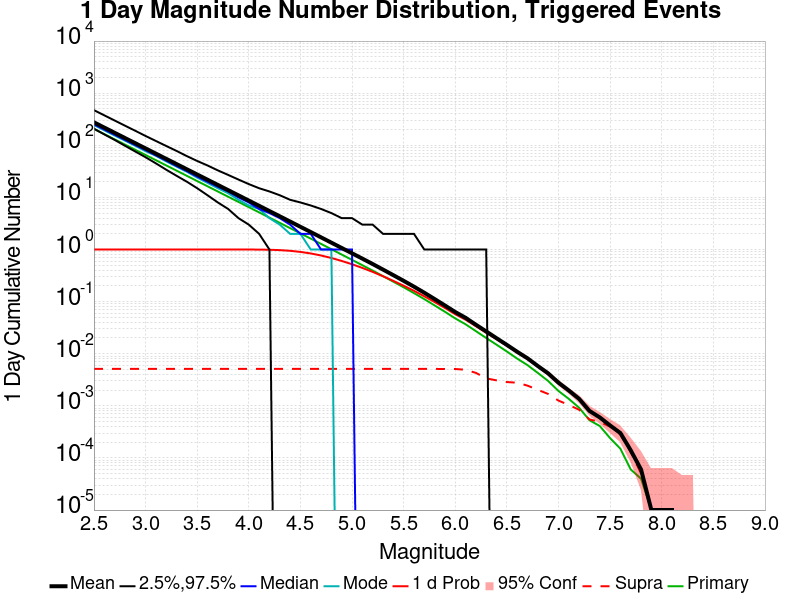
| Mag | Mean | 2.5 %ile | 97.5 %ile | Median | Mode | 1 d Probability | 1 d Supra-Seis Prob | Primary Aftershocks Mean |
|---|---|---|---|---|---|---|---|---|
| M≥2.5 | 275.776 | 208.000 | 474.000 | 253.000 | 249.000 | 1.000 (100.00%) | 5.33E-3 (0.53%) | 206.173 |
| M≥2.6 | 219.044 | 162.000 | 378.000 | 201.000 | 198.000 | 1.000 (100.00%) | 5.33E-3 (0.53%) | 163.763 |
| M≥2.7 | 173.946 | 127.000 | 300.000 | 160.000 | 154.000 | 1.000 (100.00%) | 5.33E-3 (0.53%) | 130.056 |
| M≥2.8 | 138.137 | 98.000 | 239.000 | 127.000 | 123.000 | 1.000 (100.00%) | 5.33E-3 (0.53%) | 103.291 |
| M≥2.9 | 109.730 | 76.000 | 191.000 | 101.000 | 95.000 | 1.000 (100.00%) | 5.33E-3 (0.53%) | 82.052 |
| M≥3 | 87.144 | 59.000 | 152.000 | 81.000 | 78.000 | 1.000 (100.00%) | 5.33E-3 (0.53%) | 65.164 |
| M≥3.1 | 69.210 | 45.000 | 122.000 | 64.000 | 63.000 | 1.000 (100.00%) | 5.33E-3 (0.53%) | 51.746 |
| M≥3.2 | 54.982 | 34.000 | 98.000 | 51.000 | 49.000 | 1.000 (100.00%) | 5.33E-3 (0.53%) | 41.107 |
| M≥3.3 | 43.680 | 26.000 | 78.000 | 40.000 | 39.000 | 1.000 (100.00%) | 5.33E-3 (0.53%) | 32.651 |
| M≥3.4 | 34.669 | 20.000 | 63.000 | 32.000 | 31.000 | 1.000 (100.00%) | 5.33E-3 (0.53%) | 25.924 |
| M≥3.5 | 27.521 | 15.000 | 50.000 | 26.000 | 24.000 | 1.000 (100.00%) | 5.33E-3 (0.53%) | 20.582 |
| M≥3.6 | 21.856 | 11.000 | 41.000 | 20.000 | 19.000 | 1.000 (100.00%) | 5.33E-3 (0.53%) | 16.341 |
| M≥3.7 | 17.353 | 8.000 | 33.000 | 16.000 | 15.000 | 1.000 (100.00%) | 5.33E-3 (0.53%) | 12.973 |
| M≥3.8 | 13.777 | 6.000 | 27.000 | 13.000 | 12.000 | 1.000 (100.00%) | 5.33E-3 (0.53%) | 10.303 |
| M≥3.9 | 10.940 | 4.000 | 22.000 | 10.000 | 10.000 | 1.000 (99.98%) | 5.33E-3 (0.53%) | 8.179 |
| M≥4 | 8.679 | 3.000 | 18.000 | 8.000 | 7.000 | 0.999 (99.89%) | 5.33E-3 (0.53%) | 6.492 |
| M≥4.1 | 6.888 | 2.000 | 15.000 | 6.000 | 5.000 | 0.996 (99.62%) | 5.33E-3 (0.53%) | 5.153 |
| M≥4.2 | 5.473 | 1.000 | 13.000 | 5.000 | 4.000 | 0.989 (98.91%) | 5.33E-3 (0.53%) | 4.094 |
| M≥4.3 | 4.340 | 0.000 | 11.000 | 4.000 | 3.000 | 0.974 (97.38%) | 5.33E-3 (0.53%) | 3.247 |
| M≥4.4 | 3.440 | 0.000 | 9.000 | 3.000 | 2.000 | 0.944 (94.42%) | 5.33E-3 (0.53%) | 2.574 |
| M≥4.5 | 2.728 | 0.000 | 8.000 | 2.000 | 2.000 | 0.898 (89.84%) | 5.33E-3 (0.53%) | 2.042 |
| M≥4.6 | 2.162 | 0.000 | 7.000 | 2.000 | 1.000 | 0.839 (83.92%) | 5.33E-3 (0.53%) | 1.618 |
| M≥4.7 | 1.710 | 0.000 | 6.000 | 1.000 | 1.000 | 0.766 (76.58%) | 5.33E-3 (0.53%) | 1.282 |
| M≥4.8 | 1.355 | 0.000 | 5.000 | 1.000 | 1.000 | 0.687 (68.67%) | 5.33E-3 (0.53%) | 1.014 |
| M≥4.9 | 1.071 | 0.000 | 4.000 | 1.000 | 0.000 | 0.603 (60.29%) | 5.33E-3 (0.53%) | 0.801 |
| M≥5 | 0.848 | 0.000 | 4.000 | 1.000 | 0.000 | 0.522 (52.17%) | 5.33E-3 (0.53%) | 0.634 |
| M≥5.1 | 0.672 | 0.000 | 3.000 | 0.000 | 0.000 | 0.445 (44.47%) | 5.33E-3 (0.53%) | 0.502 |
| M≥5.2 | 0.529 | 0.000 | 3.000 | 0.000 | 0.000 | 0.373 (37.27%) | 5.33E-3 (0.53%) | 0.396 |
| M≥5.3 | 0.413 | 0.000 | 2.000 | 0.000 | 0.000 | 0.307 (30.73%) | 5.33E-3 (0.53%) | 0.309 |
| M≥5.4 | 0.323 | 0.000 | 2.000 | 0.000 | 0.000 | 0.251 (25.12%) | 5.33E-3 (0.53%) | 0.243 |
| M≥5.5 | 0.252 | 0.000 | 2.000 | 0.000 | 0.000 | 0.203 (20.29%) | 5.33E-3 (0.53%) | 0.189 |
| M≥5.6 | 0.194 | 0.000 | 2.000 | 0.000 | 0.000 | 0.162 (16.16%) | 5.33E-3 (0.53%) | 0.146 |
| M≥5.7 | 0.148 | 0.000 | 1.000 | 0.000 | 0.000 | 0.127 (12.69%) | 5.33E-3 (0.53%) | 0.112 |
| M≥5.8 | 0.113 | 0.000 | 1.000 | 0.000 | 0.000 | 0.098 (9.83%) | 5.33E-3 (0.53%) | 0.085 |
| M≥5.9 | 0.085 | 0.000 | 1.000 | 0.000 | 0.000 | 0.076 (7.56%) | 5.33E-3 (0.53%) | 0.064 |
| M≥6 | 0.063 | 0.000 | 1.000 | 0.000 | 0.000 | 0.057 (5.71%) | 5.31E-3 (0.53%) | 0.048 |
| M≥6.1 | 0.049 | 0.000 | 1.000 | 0.000 | 0.000 | 0.045 (4.49%) | 5.15E-3 (0.52%) | 0.037 |
| M≥6.2 | 0.037 | 0.000 | 1.000 | 0.000 | 0.000 | 0.034 (3.40%) | 4.45E-3 (0.45%) | 0.028 |
| M≥6.3 | 0.027 | 0.000 | 1.000 | 0.000 | 0.000 | 0.025 (2.54%) | 3.42E-3 (0.34%) | 0.020 |
| M≥6.4 | 0.020 | 0.000 | 0.000 | 0.000 | 0.000 | 0.019 (1.91%) | 3.15E-3 (0.31%) | 0.015 |
| M≥6.5 | 0.015 | 0.000 | 0.000 | 0.000 | 0.000 | 0.015 (1.45%) | 3.01E-3 (0.30%) | 0.011 |
| M≥6.6 | 0.011 | 0.000 | 0.000 | 0.000 | 0.000 | 0.011 (1.08%) | 2.93E-3 (0.29%) | 8.34E-3 |
| M≥6.7 | 8.50E-3 | 0.000 | 0.000 | 0.000 | 0.000 | 8.37E-3 (0.84%) | 2.67E-3 (0.27%) | 6.40E-3 |
| M≥6.8 | 5.99E-3 | 0.000 | 0.000 | 0.000 | 0.000 | 5.92E-3 (0.59%) | 2.22E-3 (0.22%) | 4.45E-3 |
| M≥6.9 | 4.36E-3 | 0.000 | 0.000 | 0.000 | 0.000 | 4.33E-3 (0.43%) | 1.84E-3 (0.18%) | 3.18E-3 |
| M≥7 | 2.83E-3 | 0.000 | 0.000 | 0.000 | 0.000 | 2.79E-3 (0.28%) | 1.34E-3 (0.13%) | 2.02E-3 |
| M≥7.1 | 1.95E-3 | 0.000 | 0.000 | 0.000 | 0.000 | 1.93E-3 (0.19%) | 1.04E-3 (0.10%) | 1.34E-3 |
| M≥7.2 | 1.31E-3 | 0.000 | 0.000 | 0.000 | 0.000 | 1.29E-3 (0.13%) | 8.05E-4 (0.08%) | 8.77E-4 |
| M≥7.3 | 7.69E-4 | 0.000 | 0.000 | 0.000 | 0.000 | 7.51E-4 (0.08%) | 5.37E-4 (0.05%) | 4.83E-4 |
| M≥7.4 | 5.55E-4 | 0.000 | 0.000 | 0.000 | 0.000 | 5.37E-4 (0.05%) | 4.29E-4 (0.04%) | 3.76E-4 |
| M≥7.5 | 3.94E-4 | 0.000 | 0.000 | 0.000 | 0.000 | 3.76E-4 (0.04%) | 3.58E-4 (0.04%) | 2.33E-4 |
| M≥7.6 | 2.33E-4 | 0.000 | 0.000 | 0.000 | 0.000 | 2.15E-4 (0.02%) | 1.97E-4 (0.02%) | 1.25E-4 |
| M≥7.7 | 1.25E-4 | 0.000 | 0.000 | 0.000 | 0.000 | 1.25E-4 (0.01%) | 1.07E-4 (0.01%) | 7.16E-5 |
| M≥7.8 | 3.58E-5 | 0.000 | 0.000 | 0.000 | 0.000 | 3.58E-5 (0.00%) | 1.79E-5 (0.00%) | 3.58E-5 |
| M≥7.9 | 0.000 | 0.000 | 0.000 | 0.000 | 0.000 | 0.000 (0.00%) | 0.000 (0.00%) | 0.000 |
| M≥8 | 0.000 | 0.000 | 0.000 | 0.000 | 0.000 | 0.000 (0.00%) | 0.000 (0.00%) | 0.000 |
| M≥8.1 | 0.000 | 0.000 | 0.000 | 0.000 | 0.000 | 0.000 (0.00%) | 0.000 (0.00%) | 0.000 |
| M≥8.2 | 0.000 | 0.000 | 0.000 | 0.000 | 0.000 | 0.000 (0.00%) | 0.000 (0.00%) | 0.000 |
| M≥8.3 | 0.000 | 0.000 | 0.000 | 0.000 | 0.000 | 0.000 (0.00%) | 0.000 (0.00%) | 0.000 |
| M≥8.4 | 0.000 | 0.000 | 0.000 | 0.000 | 0.000 | 0.000 (0.00%) | 0.000 (0.00%) | 0.000 |
| M≥8.5 | 0.000 | 0.000 | 0.000 | 0.000 | 0.000 | 0.000 (0.00%) | 0.000 (0.00%) | 0.000 |
| M≥8.6 | 0.000 | 0.000 | 0.000 | 0.000 | 0.000 | 0.000 (0.00%) | 0.000 (0.00%) | 0.000 |
| M≥8.7 | 0.000 | 0.000 | 0.000 | 0.000 | 0.000 | 0.000 (0.00%) | 0.000 (0.00%) | 0.000 |
| M≥8.8 | 0.000 | 0.000 | 0.000 | 0.000 | 0.000 | 0.000 (0.00%) | 0.000 (0.00%) | 0.000 |
| M≥8.9 | 0.000 | 0.000 | 0.000 | 0.000 | 0.000 | 0.000 (0.00%) | 0.000 (0.00%) | 0.000 |
| M≥9 | 0.000 | 0.000 | 0.000 | 0.000 | 0.000 | 0.000 (0.00%) | 0.000 (0.00%) | 0.000 |
Legend

| Mag | Mean | 2.5 %ile | 97.5 %ile | Median | Mode | 1 hr Probability | 1 hr Supra-Seis Prob | Primary Aftershocks Mean |
|---|---|---|---|---|---|---|---|---|
| M≥2.5 | 99.710 | 77.000 | 133.000 | 97.000 | 96.000 | 1.000 (100.00%) | 1.82E-3 (0.18%) | 90.567 |
| M≥2.6 | 79.196 | 59.000 | 107.000 | 77.000 | 75.000 | 1.000 (100.00%) | 1.82E-3 (0.18%) | 71.928 |
| M≥2.7 | 62.901 | 45.000 | 87.000 | 61.000 | 60.000 | 1.000 (100.00%) | 1.82E-3 (0.18%) | 57.134 |
| M≥2.8 | 49.958 | 35.000 | 70.000 | 49.000 | 49.000 | 1.000 (100.00%) | 1.82E-3 (0.18%) | 45.382 |
| M≥2.9 | 39.689 | 26.000 | 57.000 | 39.000 | 39.000 | 1.000 (100.00%) | 1.82E-3 (0.18%) | 36.046 |
| M≥3 | 31.509 | 20.000 | 47.000 | 31.000 | 30.000 | 1.000 (100.00%) | 1.82E-3 (0.18%) | 28.619 |
| M≥3.1 | 25.027 | 15.000 | 38.000 | 24.000 | 23.000 | 1.000 (100.00%) | 1.82E-3 (0.18%) | 22.730 |
| M≥3.2 | 19.876 | 11.000 | 31.000 | 19.000 | 19.000 | 1.000 (100.00%) | 1.82E-3 (0.18%) | 18.051 |
| M≥3.3 | 15.787 | 8.000 | 26.000 | 15.000 | 15.000 | 1.000 (100.00%) | 1.82E-3 (0.18%) | 14.340 |
| M≥3.4 | 12.541 | 6.000 | 21.000 | 12.000 | 12.000 | 1.000 (100.00%) | 1.82E-3 (0.18%) | 11.393 |
| M≥3.5 | 9.960 | 4.000 | 18.000 | 10.000 | 9.000 | 1.000 (99.98%) | 1.82E-3 (0.18%) | 9.052 |
| M≥3.6 | 7.908 | 3.000 | 15.000 | 8.000 | 7.000 | 0.999 (99.93%) | 1.82E-3 (0.18%) | 7.183 |
| M≥3.7 | 6.272 | 2.000 | 12.000 | 6.000 | 5.000 | 0.997 (99.71%) | 1.82E-3 (0.18%) | 5.696 |
| M≥3.8 | 4.981 | 1.000 | 10.000 | 5.000 | 4.000 | 0.991 (99.06%) | 1.82E-3 (0.18%) | 4.526 |
| M≥3.9 | 3.956 | 1.000 | 9.000 | 4.000 | 3.000 | 0.976 (97.61%) | 1.82E-3 (0.18%) | 3.598 |
| M≥4 | 3.141 | 0.000 | 7.000 | 3.000 | 2.000 | 0.948 (94.85%) | 1.82E-3 (0.18%) | 2.859 |
| M≥4.1 | 2.491 | 0.000 | 6.000 | 2.000 | 2.000 | 0.905 (90.48%) | 1.82E-3 (0.18%) | 2.269 |
| M≥4.2 | 1.981 | 0.000 | 5.000 | 2.000 | 1.000 | 0.844 (84.44%) | 1.82E-3 (0.18%) | 1.804 |
| M≥4.3 | 1.571 | 0.000 | 5.000 | 1.000 | 1.000 | 0.773 (77.30%) | 1.82E-3 (0.18%) | 1.429 |
| M≥4.4 | 1.244 | 0.000 | 4.000 | 1.000 | 1.000 | 0.692 (69.17%) | 1.82E-3 (0.18%) | 1.132 |
| M≥4.5 | 0.987 | 0.000 | 4.000 | 1.000 | 0.000 | 0.608 (60.82%) | 1.82E-3 (0.18%) | 0.898 |
| M≥4.6 | 0.785 | 0.000 | 3.000 | 1.000 | 0.000 | 0.525 (52.50%) | 1.82E-3 (0.18%) | 0.715 |
| M≥4.7 | 0.623 | 0.000 | 3.000 | 0.000 | 0.000 | 0.445 (44.48%) | 1.82E-3 (0.18%) | 0.566 |
| M≥4.8 | 0.493 | 0.000 | 2.000 | 0.000 | 0.000 | 0.374 (37.37%) | 1.82E-3 (0.18%) | 0.449 |
| M≥4.9 | 0.391 | 0.000 | 2.000 | 0.000 | 0.000 | 0.311 (31.11%) | 1.82E-3 (0.18%) | 0.356 |
| M≥5 | 0.311 | 0.000 | 2.000 | 0.000 | 0.000 | 0.257 (25.69%) | 1.82E-3 (0.18%) | 0.283 |
| M≥5.1 | 0.248 | 0.000 | 2.000 | 0.000 | 0.000 | 0.211 (21.11%) | 1.82E-3 (0.18%) | 0.225 |
| M≥5.2 | 0.195 | 0.000 | 1.000 | 0.000 | 0.000 | 0.170 (17.00%) | 1.82E-3 (0.18%) | 0.176 |
| M≥5.3 | 0.152 | 0.000 | 1.000 | 0.000 | 0.000 | 0.136 (13.61%) | 1.82E-3 (0.18%) | 0.138 |
| M≥5.4 | 0.119 | 0.000 | 1.000 | 0.000 | 0.000 | 0.108 (10.84%) | 1.82E-3 (0.18%) | 0.108 |
| M≥5.5 | 0.092 | 0.000 | 1.000 | 0.000 | 0.000 | 0.085 (8.53%) | 1.82E-3 (0.18%) | 0.084 |
| M≥5.6 | 0.071 | 0.000 | 1.000 | 0.000 | 0.000 | 0.067 (6.68%) | 1.82E-3 (0.18%) | 0.065 |
| M≥5.7 | 0.054 | 0.000 | 1.000 | 0.000 | 0.000 | 0.052 (5.18%) | 1.82E-3 (0.18%) | 0.050 |
| M≥5.8 | 0.041 | 0.000 | 1.000 | 0.000 | 0.000 | 0.040 (3.95%) | 1.82E-3 (0.18%) | 0.037 |
| M≥5.9 | 0.031 | 0.000 | 1.000 | 0.000 | 0.000 | 0.029 (2.94%) | 1.82E-3 (0.18%) | 0.028 |
| M≥6 | 0.023 | 0.000 | 0.000 | 0.000 | 0.000 | 0.022 (2.21%) | 1.82E-3 (0.18%) | 0.021 |
| M≥6.1 | 0.018 | 0.000 | 0.000 | 0.000 | 0.000 | 0.017 (1.74%) | 1.75E-3 (0.18%) | 0.016 |
| M≥6.2 | 0.013 | 0.000 | 0.000 | 0.000 | 0.000 | 0.013 (1.29%) | 1.57E-3 (0.16%) | 0.012 |
| M≥6.3 | 9.68E-3 | 0.000 | 0.000 | 0.000 | 0.000 | 9.52E-3 (0.95%) | 1.16E-3 (0.12%) | 8.84E-3 |
| M≥6.4 | 7.05E-3 | 0.000 | 0.000 | 0.000 | 0.000 | 6.96E-3 (0.70%) | 1.02E-3 (0.10%) | 6.42E-3 |
| M≥6.5 | 5.13E-3 | 0.000 | 0.000 | 0.000 | 0.000 | 5.06E-3 (0.51%) | 9.66E-4 (0.10%) | 4.67E-3 |
| M≥6.6 | 3.77E-3 | 0.000 | 0.000 | 0.000 | 0.000 | 3.70E-3 (0.37%) | 9.48E-4 (0.09%) | 3.42E-3 |
| M≥6.7 | 2.83E-3 | 0.000 | 0.000 | 0.000 | 0.000 | 2.81E-3 (0.28%) | 8.77E-4 (0.09%) | 2.58E-3 |
| M≥6.8 | 1.90E-3 | 0.000 | 0.000 | 0.000 | 0.000 | 1.90E-3 (0.19%) | 6.80E-4 (0.07%) | 1.74E-3 |
| M≥6.9 | 1.36E-3 | 0.000 | 0.000 | 0.000 | 0.000 | 1.36E-3 (0.14%) | 5.55E-4 (0.06%) | 1.25E-3 |
| M≥7 | 8.23E-4 | 0.000 | 0.000 | 0.000 | 0.000 | 8.23E-4 (0.08%) | 3.76E-4 (0.04%) | 7.51E-4 |
| M≥7.1 | 6.62E-4 | 0.000 | 0.000 | 0.000 | 0.000 | 6.62E-4 (0.07%) | 3.22E-4 (0.03%) | 5.90E-4 |
| M≥7.2 | 4.11E-4 | 0.000 | 0.000 | 0.000 | 0.000 | 4.11E-4 (0.04%) | 2.15E-4 (0.02%) | 3.76E-4 |
| M≥7.3 | 2.50E-4 | 0.000 | 0.000 | 0.000 | 0.000 | 2.50E-4 (0.03%) | 1.43E-4 (0.01%) | 2.15E-4 |
| M≥7.4 | 1.43E-4 | 0.000 | 0.000 | 0.000 | 0.000 | 1.43E-4 (0.01%) | 8.94E-5 (0.01%) | 1.43E-4 |
| M≥7.5 | 7.16E-5 | 0.000 | 0.000 | 0.000 | 0.000 | 7.16E-5 (0.01%) | 7.16E-5 (0.01%) | 7.16E-5 |
| M≥7.6 | 1.79E-5 | 0.000 | 0.000 | 0.000 | 0.000 | 1.79E-5 (0.00%) | 1.79E-5 (0.00%) | 1.79E-5 |
| M≥7.7 | 1.79E-5 | 0.000 | 0.000 | 0.000 | 0.000 | 1.79E-5 (0.00%) | 1.79E-5 (0.00%) | 1.79E-5 |
| M≥7.8 | 0.000 | 0.000 | 0.000 | 0.000 | 0.000 | 0.000 (0.00%) | 0.000 (0.00%) | 0.000 |
| M≥7.9 | 0.000 | 0.000 | 0.000 | 0.000 | 0.000 | 0.000 (0.00%) | 0.000 (0.00%) | 0.000 |
| M≥8 | 0.000 | 0.000 | 0.000 | 0.000 | 0.000 | 0.000 (0.00%) | 0.000 (0.00%) | 0.000 |
| M≥8.1 | 0.000 | 0.000 | 0.000 | 0.000 | 0.000 | 0.000 (0.00%) | 0.000 (0.00%) | 0.000 |
| M≥8.2 | 0.000 | 0.000 | 0.000 | 0.000 | 0.000 | 0.000 (0.00%) | 0.000 (0.00%) | 0.000 |
| M≥8.3 | 0.000 | 0.000 | 0.000 | 0.000 | 0.000 | 0.000 (0.00%) | 0.000 (0.00%) | 0.000 |
| M≥8.4 | 0.000 | 0.000 | 0.000 | 0.000 | 0.000 | 0.000 (0.00%) | 0.000 (0.00%) | 0.000 |
| M≥8.5 | 0.000 | 0.000 | 0.000 | 0.000 | 0.000 | 0.000 (0.00%) | 0.000 (0.00%) | 0.000 |
| M≥8.6 | 0.000 | 0.000 | 0.000 | 0.000 | 0.000 | 0.000 (0.00%) | 0.000 (0.00%) | 0.000 |
| M≥8.7 | 0.000 | 0.000 | 0.000 | 0.000 | 0.000 | 0.000 (0.00%) | 0.000 (0.00%) | 0.000 |
| M≥8.8 | 0.000 | 0.000 | 0.000 | 0.000 | 0.000 | 0.000 (0.00%) | 0.000 (0.00%) | 0.000 |
| M≥8.9 | 0.000 | 0.000 | 0.000 | 0.000 | 0.000 | 0.000 (0.00%) | 0.000 (0.00%) | 0.000 |
| M≥9 | 0.000 | 0.000 | 0.000 | 0.000 | 0.000 | 0.000 (0.00%) | 0.000 (0.00%) | 0.000 |
These plots show how the probability of ruptures of various magnitudes within 100km of any scenario rupture changes over time

| Forecast Duration | UCERF3-ETAS [95% Conf] | UCERF3-ETAS Triggered Only | UCERF3-TD | UCERF3-ETAS/TD Gain | UCERF3-TI |
|---|---|---|---|---|---|
| 1 Hour | 0.255 [0.252 - 0.259] | 0.255 | 5.51E-5 | 4638.36 | 5.46E-5 |
| 1 Day | 0.519 [0.515 - 0.524] | 0.519 | 1.32E-3 | 393.33 | 1.31E-3 |
| 1 Week | 0.640 [0.636 - 0.644] | 0.636 | 9.21E-3 | 69.46 | 9.13E-3 |
| 1 Month | 0.714 [0.711 - 0.718] | 0.703 | 0.039 | 18.38 | 0.039 |
| 1 Year | 0.869 [0.867 - 0.871] | 0.787 | 0.383 | 2.27 | 0.380 |
| 10 Years | 0.999 [0.999 - 0.999] | 0.840 | 0.992 | 1.01 | 0.992 |
| 30 Years | 1.000 [1.000 - 1.000] * | * | 1.000 | 1 * | 1.000 |
| 100 Years | 1.000 [1.000 - 1.000] * | * | 1.000 | 1 * | 1.000 |
* forecast duration is longer than simulation length, only ETAS ruptures from the first 10 years are included

| Forecast Duration | UCERF3-ETAS [95% Conf] | UCERF3-ETAS Triggered Only | UCERF3-TD | UCERF3-ETAS/TD Gain | UCERF3-TI |
|---|---|---|---|---|---|
| 1 Hour | 0.022 [0.021 - 0.023] | 0.022 | 6.58E-6 | 3335.94 | 6.13E-6 |
| 1 Day | 0.057 [0.055 - 0.059] | 0.056 | 1.58E-4 | 358.27 | 1.47E-4 |
| 1 Week | 0.081 [0.078 - 0.083] | 0.080 | 1.11E-3 | 72.99 | 1.03E-3 |
| 1 Month | 0.100 [0.098 - 0.103] | 0.096 | 4.73E-3 | 21.22 | 4.40E-3 |
| 1 Year | 0.175 [0.172 - 0.177] | 0.126 | 0.056 | 3.12 | 0.052 |
| 10 Years | 0.524 [0.522 - 0.526] | 0.152 | 0.439 | 1.19 | 0.416 |
| 30 Years | 0.851 [0.850 - 0.851] * | * | 0.824 | 1.03 * | 0.800 |
| 100 Years | 0.998 [0.998 - 0.998] * | * | 0.997 | 1 * | 0.995 |
* forecast duration is longer than simulation length, only ETAS ruptures from the first 10 years are included

| Forecast Duration | UCERF3-ETAS [95% Conf] | UCERF3-ETAS Triggered Only | UCERF3-TD | UCERF3-ETAS/TD Gain | UCERF3-TI |
|---|---|---|---|---|---|
| 1 Hour | 8.24E-4 [6.10E-4 - 1.11E-3] | 8.23E-4 | 6.47E-7 | 1273.37 | 5.83E-7 |
| 1 Day | 2.73E-3 [2.33E-3 - 3.21E-3] | 2.72E-3 | 1.55E-5 | 176.18 | 1.40E-5 |
| 1 Week | 4.17E-3 [3.67E-3 - 4.74E-3] | 4.06E-3 | 1.09E-4 | 38.37 | 9.80E-5 |
| 1 Month | 5.44E-3 [4.88E-3 - 6.06E-3] | 4.97E-3 | 4.66E-4 | 11.68 | 4.20E-4 |
| 1 Year | 0.013 [0.012 - 0.013] | 6.99E-3 | 5.65E-3 | 2.23 | 5.10E-3 |
| 10 Years | 0.064 [0.063 - 0.064] | 8.96E-3 | 0.055 | 1.15 | 0.050 |
| 30 Years | 0.166 [0.166 - 0.167] * | * | 0.159 | 1.05 * | 0.142 |
| 100 Years | 0.457 [0.457 - 0.457] * | * | 0.452 | 1.01 * | 0.400 |
* forecast duration is longer than simulation length, only ETAS ruptures from the first 10 years are included

| Section Name | Strike, Dip, Rake | # Hypos In Poly | Max Mag w/ Hypo In Poly | # Surfs In Poly | Max Mag w/ Surf In Poly | Min Dist To Any (km) | Min Poly Dist To Any (km) | Min Dist To Largest (km) | Min Poly Dist To Largest (km) |
|---|---|---|---|---|---|---|---|---|---|
| Airport Lake | 358, 50, -90 | 0 | 0 | 12.124 | 2.716 | 12.221 | 2.716 | ||
| Little Lake | 327, 90, 180 | 0 | 0 | 16.936 | 4.928 | 16.936 | 4.928 | ||
| Tank Canyon | 189, 50, -90 | 0 | 0 | 17.039 | 16.895 | 17.039 | 16.895 |
These are map plots of individual catalogs from the simulations, selected as the closest catalog to each of the given percentiles in terms of total number of events.
| Duration | p0.0 %-ile | p25.0 %-ile | p50.0 %-ile | p75.0 %-ile | p90.0 %-ile | p95.0 %-ile | p97.5 %-ile | p98.0 %-ile | p99.0 %-ile | p99.5 %-ile | p99.9 %-ile | p100.0 %-ile |
|---|---|---|---|---|---|---|---|---|---|---|---|---|
| 1 Week |  |  |  |  |  |  |  | 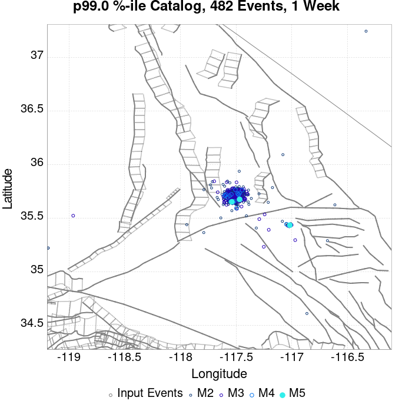 |  | 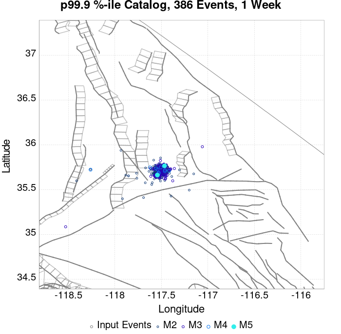 |  | |
| 1 Month |  |  |  |  |  |  | 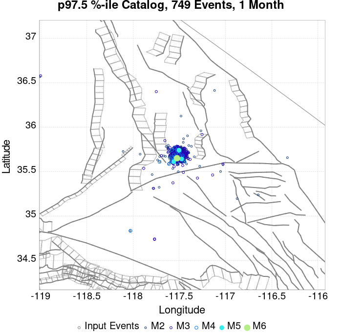 |  |  |  |  |  |
| 1 Year |  |  |  | 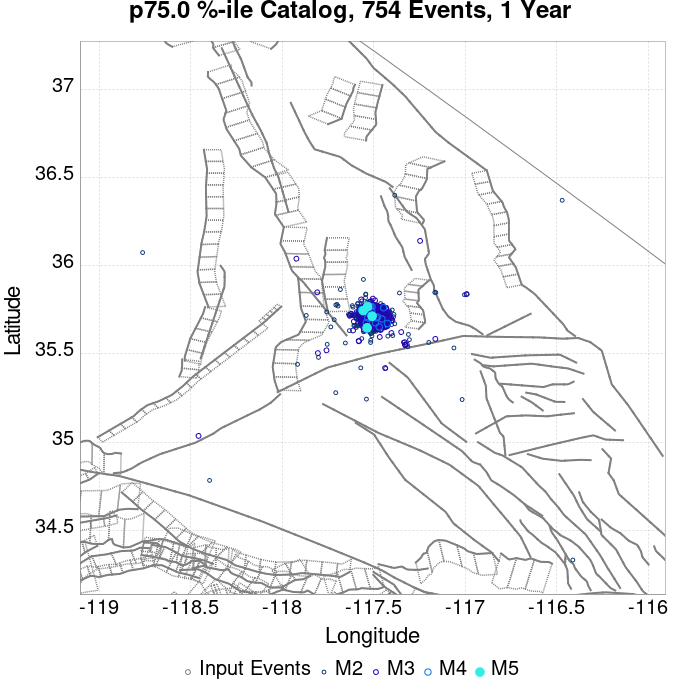 |  |  |  |  |  | 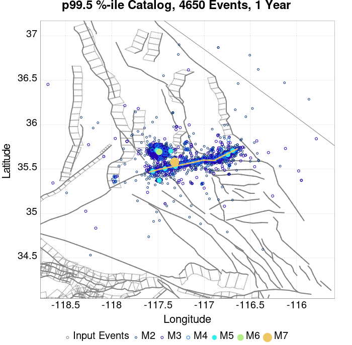 |  |  |
| 10 Year |  |  |  |  |  |  | 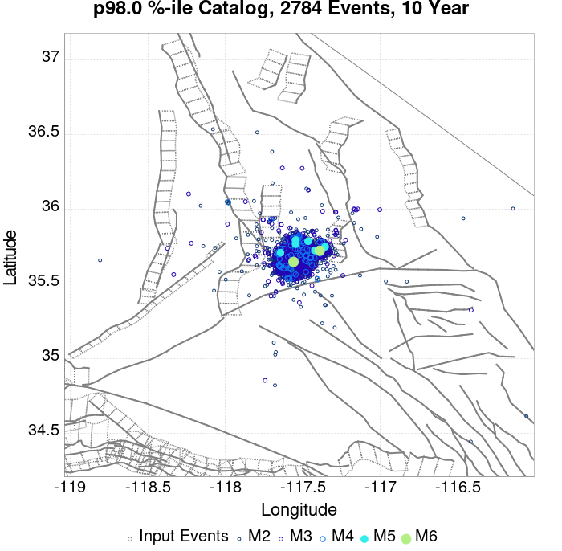 |  |  | 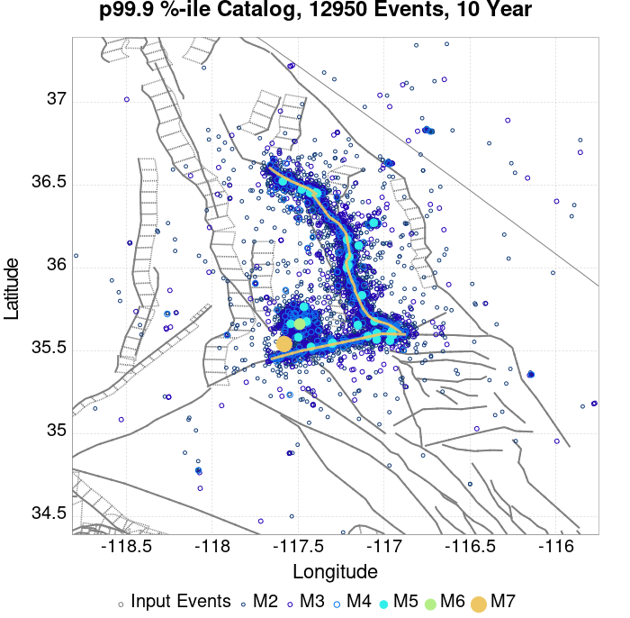 |  |
These plots compare simulated sequences with data from ComCat. All plots only consider events with hypocenters inside the ComCat region defined in the JSON input file, and consider ruptures above Mc=3.5
Last updated at 2019/09/21 01:33:47 UTC, 78.3 d after the simulation start time
| Incremental MND | Cumulative MND |
|---|---|
 |  |
| M≥3.5 | M≥4 | M≥5 | M≥6 | M≥7 | M≥8 |
|---|---|---|---|---|---|
 |  |  |  |  |  |

| 1 Day | 1 Week | 1 Month | Current (78.3 Day) | |
|---|---|---|---|---|
| M≥3.5 |  | 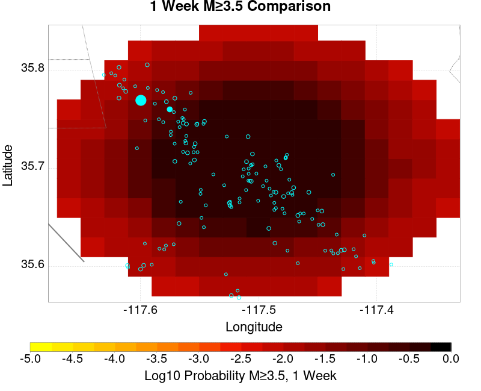 |  |  |
| M≥4 |  |  |  |  |
| M≥5 |  |  |  |  |
| M≥6 |  |  |  |  |
| M≥7 |  |  |  |  |
| M≥8 | 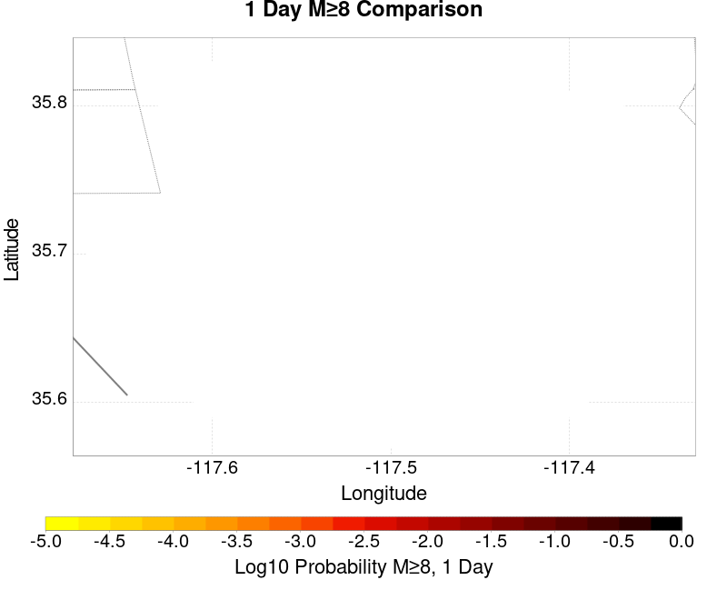 |  |  |  |
| 1 Day | 1 Week | 1 Month | Current (78.3 Day) | |
|---|---|---|---|---|
| M≥3.5 |  |  |  |  |
| M≥4 |  |  |  | 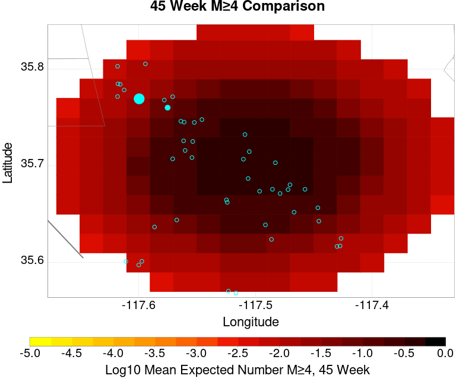 |
| M≥5 |  |  |  |  |
| M≥6 |  |  |  |  |
| M≥7 | 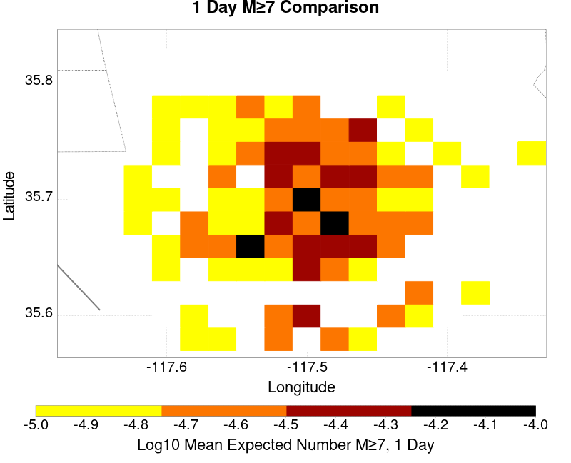 |  | 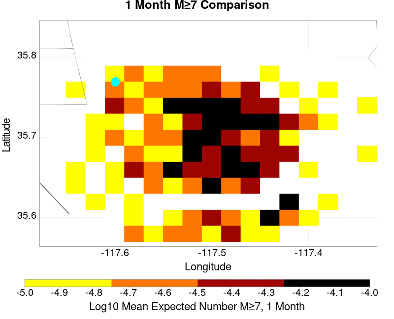 |  |
| M≥8 |  |  |  |  |
| M≥3.5 | M≥4 | M≥5 | M≥6 | M≥7 | M≥8 |
|---|---|---|---|---|---|
 |  |  |  |  |  |
| Min Mag | 1 yr Triggered Ruptures (no spontaneous) | 10 yr Triggered Ruptures (no spontaneous) | 10 yr Triggered Ruptures (primary aftershocks only) |
|---|---|---|---|
| All Supra. Seis. |  |  |  |
| M≥6.5 |  |  |  |
| M≥7 |  |  |  |
| M≥7.5 |  |  |  |
First 10 of 77 with matching ruptures shown
| Parent Name | Triggered 10 Year Mean Count | Triggered 1 Day Prob | Triggered 1 Week Prob | Triggered 1 Month Prob | Triggered 1 Year Prob | Triggered 10 Year Prob | Triggered 10 Year Primary Mean Count |
|---|---|---|---|---|---|---|---|
| Garlock (Central) | 0.0074060825 | 0.0016279069 | 0.002665474 | 0.0034168158 | 0.00509839 | 0.0072450805 | 0.0021466906 |
| Little Lake | 0.0065116277 | 0.0021109122 | 0.0028443648 | 0.0035599284 | 0.005080501 | 0.0064400714 | 0.0027906976 |
| Airport Lake | 0.0048658317 | 0.0016279069 | 0.0023434705 | 0.0029516995 | 0.0040429337 | 0.004847943 | 0.0022719142 |
| Panamint Valley | 0.0022719142 | 4.8300537E-4 | 9.1234344E-4 | 0.0010733453 | 0.0015742397 | 0.002254025 | 6.440072E-4 |
| Tank Canyon | 0.0016457961 | 2.3255814E-4 | 4.8300537E-4 | 7.155635E-4 | 0.0012522362 | 0.0016279069 | 5.0089444E-4 |
| Owl Lake | 0.0011627907 | 1.9677996E-4 | 3.7567085E-4 | 5.5456173E-4 | 8.4078714E-4 | 0.0011627907 | 3.0411448E-4 |
| Hunter Mountain-Saline Valley | 0.0010912344 | 1.9677996E-4 | 4.651163E-4 | 5.724508E-4 | 7.8711985E-4 | 0.0010912344 | 3.0411448E-4 |
| Garlock (East) | 0.001019678 | 1.9677996E-4 | 3.3989266E-4 | 4.1144903E-4 | 7.6923077E-4 | 0.001019678 | 3.3989266E-4 |
| Garlock (West) | 6.0822896E-4 | 1.0733453E-4 | 1.431127E-4 | 2.5044722E-4 | 3.9355992E-4 | 6.0822896E-4 | 2.5044722E-4 |
| Ash Hill | 3.9355992E-4 | 5.3667263E-5 | 1.0733453E-4 | 1.9677996E-4 | 2.6833633E-4 | 3.9355992E-4 | 8.9445435E-5 |
First 10 of 64 with matching ruptures shown
| Parent Name | Triggered 10 Year Mean Count | Triggered 1 Day Prob | Triggered 1 Week Prob | Triggered 1 Month Prob | Triggered 1 Year Prob | Triggered 10 Year Prob | Triggered 10 Year Primary Mean Count |
|---|---|---|---|---|---|---|---|
| Airport Lake | 0.0039713774 | 0.0013595707 | 0.0019320215 | 0.0023792486 | 0.0033452595 | 0.0039713774 | 0.0019141324 |
| Little Lake | 0.0035957065 | 0.0011449016 | 0.0015742397 | 0.0019677996 | 0.0027906976 | 0.0035957065 | 0.0015384615 |
| Garlock (Central) | 0.0035599284 | 8.050089E-4 | 0.0013774597 | 0.0017531306 | 0.0025581396 | 0.0035241502 | 0.0011806798 |
| Panamint Valley | 0.0021466906 | 4.651163E-4 | 8.9445437E-4 | 0.0010554561 | 0.0014669052 | 0.0021288015 | 6.261181E-4 |
| Hunter Mountain-Saline Valley | 0.0010912344 | 1.9677996E-4 | 4.651163E-4 | 5.724508E-4 | 7.8711985E-4 | 0.0010912344 | 3.0411448E-4 |
| Owl Lake | 0.0010554561 | 1.7889087E-4 | 3.5778174E-4 | 5.187835E-4 | 7.8711985E-4 | 0.0010554561 | 2.862254E-4 |
| Garlock (East) | 9.838998E-4 | 1.7889087E-4 | 3.0411448E-4 | 3.7567085E-4 | 7.334526E-4 | 9.838998E-4 | 3.3989266E-4 |
| Garlock (West) | 5.724508E-4 | 1.0733453E-4 | 1.431127E-4 | 2.3255814E-4 | 3.7567085E-4 | 5.724508E-4 | 2.3255814E-4 |
| Tank Canyon | 3.9355992E-4 | 7.155635E-5 | 1.0733453E-4 | 1.431127E-4 | 2.862254E-4 | 3.9355992E-4 | 1.2522361E-4 |
| So Sierra Nevada | 3.5778174E-4 | 7.155635E-5 | 1.2522361E-4 | 1.7889087E-4 | 2.6833633E-4 | 3.5778174E-4 | 1.0733453E-4 |
First 10 of 44 with matching ruptures shown
| Parent Name | Triggered 10 Year Mean Count | Triggered 1 Day Prob | Triggered 1 Week Prob | Triggered 1 Month Prob | Triggered 1 Year Prob | Triggered 10 Year Prob | Triggered 10 Year Primary Mean Count |
|---|---|---|---|---|---|---|---|
| Garlock (Central) | 0.0033094813 | 7.155635E-4 | 0.0012701253 | 0.0016279069 | 0.0023613595 | 0.003273703 | 0.0010912344 |
| Panamint Valley | 0.0015742397 | 3.3989266E-4 | 6.797853E-4 | 7.8711985E-4 | 0.0010733453 | 0.0015563506 | 4.8300537E-4 |
| Hunter Mountain-Saline Valley | 0.0010733453 | 1.9677996E-4 | 4.651163E-4 | 5.724508E-4 | 7.6923077E-4 | 0.0010733453 | 3.0411448E-4 |
| Little Lake | 0.001037567 | 4.1144903E-4 | 5.187835E-4 | 5.903399E-4 | 8.9445437E-4 | 0.001037567 | 4.651163E-4 |
| Airport Lake | 9.838998E-4 | 3.9355992E-4 | 4.8300537E-4 | 5.5456173E-4 | 8.586762E-4 | 9.838998E-4 | 4.651163E-4 |
| Owl Lake | 9.6601073E-4 | 1.7889087E-4 | 3.5778174E-4 | 5.187835E-4 | 7.334526E-4 | 9.6601073E-4 | 2.6833633E-4 |
| Garlock (East) | 9.302326E-4 | 1.7889087E-4 | 2.862254E-4 | 3.5778174E-4 | 6.976744E-4 | 9.302326E-4 | 3.3989266E-4 |
| Garlock (West) | 5.724508E-4 | 1.0733453E-4 | 1.431127E-4 | 2.3255814E-4 | 3.7567085E-4 | 5.724508E-4 | 2.3255814E-4 |
| San Andreas (Mojave N) | 2.5044722E-4 | 5.3667263E-5 | 7.155635E-5 | 1.0733453E-4 | 1.9677996E-4 | 2.5044722E-4 | 1.0733453E-4 |
| San Andreas (Mojave S) | 2.1466905E-4 | 3.5778176E-5 | 5.3667263E-5 | 8.9445435E-5 | 1.610018E-4 | 2.1466905E-4 | 1.0733453E-4 |
First 10 of 27 with matching ruptures shown
| Parent Name | Triggered 10 Year Mean Count | Triggered 1 Day Prob | Triggered 1 Week Prob | Triggered 1 Month Prob | Triggered 1 Year Prob | Triggered 10 Year Prob | Triggered 10 Year Primary Mean Count |
|---|---|---|---|---|---|---|---|
| Garlock (Central) | 0.001431127 | 2.3255814E-4 | 5.0089444E-4 | 6.440072E-4 | 9.4812165E-4 | 0.001431127 | 4.651163E-4 |
| Hunter Mountain-Saline Valley | 0.001019678 | 1.9677996E-4 | 4.651163E-4 | 5.5456173E-4 | 7.334526E-4 | 0.001019678 | 3.0411448E-4 |
| Panamint Valley | 0.001019678 | 1.9677996E-4 | 4.651163E-4 | 5.5456173E-4 | 7.334526E-4 | 0.001019678 | 3.0411448E-4 |
| Garlock (West) | 5.0089444E-4 | 7.155635E-5 | 1.0733453E-4 | 1.610018E-4 | 3.0411448E-4 | 5.0089444E-4 | 1.9677996E-4 |
| Garlock (East) | 3.220036E-4 | 5.3667263E-5 | 8.9445435E-5 | 1.2522361E-4 | 2.3255814E-4 | 3.220036E-4 | 1.2522361E-4 |
| San Andreas (Mojave N) | 2.5044722E-4 | 5.3667263E-5 | 7.155635E-5 | 1.0733453E-4 | 1.9677996E-4 | 2.5044722E-4 | 1.0733453E-4 |
| San Andreas (Mojave S) | 2.1466905E-4 | 3.5778176E-5 | 5.3667263E-5 | 8.9445435E-5 | 1.610018E-4 | 2.1466905E-4 | 1.0733453E-4 |
| Death Valley (Black Mtns Frontal) | 1.2522361E-4 | 7.155635E-5 | 8.9445435E-5 | 1.0733453E-4 | 1.0733453E-4 | 1.2522361E-4 | 7.155635E-5 |
| Death Valley (No) | 1.2522361E-4 | 7.155635E-5 | 8.9445435E-5 | 1.0733453E-4 | 1.0733453E-4 | 1.2522361E-4 | 7.155635E-5 |
| San Andreas (San Bernardino N) | 1.2522361E-4 | 1.7889088E-5 | 1.7889088E-5 | 3.5778176E-5 | 8.9445435E-5 | 1.2522361E-4 | 5.3667263E-5 |
The first 5 sections (sorted by trigger rate) are plotted below. All fault MPDs are available here
| 1 Week | 1 Month | 1 Year | 10 Year |
|---|---|---|---|
 |  |  |  |
 |  |  |  |
 |  |  |  |
 |  |  | 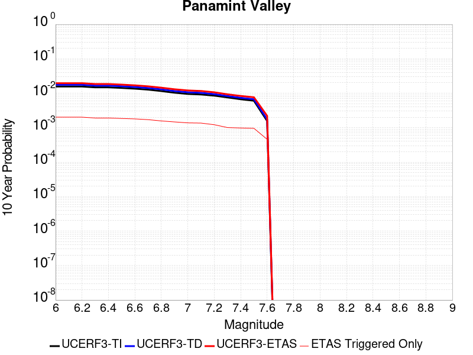 |
 |  |  |  |
| Min Mag | Triggered Ruptures (no spontaneous) | Triggered Ruptures (primary aftershocks only) |
|---|---|---|
| M≥2.5 |  |  |
| M≥5 |  |  |
| M≥6 |  |  |
| M≥7 |  |
{
"numSimulations": 100000,
"duration": 10.0,
"startTimeMillis": 1562261630000,
"includeSpontaneous": false,
"randomSeed": 1568924297288,
"binaryOutput": true,
"binaryOutputFilters": [
{
"prefix": "results_complete",
"descendantsOnly": false
},
{
"prefix": "results_m5_preserve_chain",
"minMag": 5.0,
"preserveChainBelowMag": true,
"descendantsOnly": false
}
],
"forceRecalc": false,
"simulationName": "ComCat M6.4 (ci38443183), Point Sources, Impose G-R",
"numRetries": 3,
"outputDir": "${ETAS_SIM_DIR}/2019_09_19-ComCatM6p4_ci38443183_PointSources_ImposeGR",
"triggerRuptures": [
{
"occurrenceTimeMillis": 1562259775340,
"comcatEventID": "ci38443095",
"mag": 3.98,
"latitude": 35.708,
"longitude": -117.5036667,
"depth": 10.58
},
{
"occurrenceTimeMillis": 1562261629000,
"comcatEventID": "ci38443183",
"mag": 6.4,
"latitude": 35.7053333,
"longitude": -117.5038333,
"depth": 10.5
}
],
"cacheDir": "${ETAS_LAUNCHER}/inputs/cache_fm3p1_ba",
"fssFile": "${ETAS_LAUNCHER}/inputs/2013_05_10-ucerf3p3-production-10runs_COMPOUND_SOL_FM3_1_SpatSeisU3_MEAN_BRANCH_AVG_SOL.zip",
"probModel": "FULL_TD",
"applySubSeisForSupraNucl": true,
"totRateScaleFactor": 1.14,
"gridSeisCorr": true,
"timeIndependentERF": false,
"griddedOnly": false,
"imposeGR": true,
"includeIndirectTriggering": true,
"gridSeisDiscr": 0.1,
"catalogCompletenessModel": "RELAXED",
"configCommand": "u3etas_comcat_event_config_builder.sh --event-id ci38443183 --num-simulations 100000 --days-before 7 --impose-gr --mag-complete 3.5 --hpc-site USC_HPC --nodes 36 --hours 24 --queue scec",
"configTime": 1568924297288,
"comcatMetadata": {
"region": {
"centerLatitude": 35.7053333,
"centerLongitude": -117.5038333,
"radius": 15.703628043335499
},
"eventID": "ci38443183",
"minDepth": -10.0,
"maxDepth": 24.0,
"minMag": 2.5,
"startTime": 1561656829000,
"endTime": 1562261629001,
"magComplete": 3.5
}
}